pacman::p_load(sf,raster, spatstat, tmap, tidyverse, spNetwork, sparr, RColorBrewer)Take-home Exercise 1: Geospatial Analytics for Public Good
1 Overview
1.1 Setting the scene
According to the World Health Organization (WHO) report, road traffic accidents cause 1.19 million deaths annually, with most fatalities occurring in low- and middle-income countries. Vulnerable road users, including pedestrians and motorcyclists, account for over half of these deaths, and road injuries are the leading cause of death for ages 5–29. The economic impact is severe, costing countries 3% of their GDP.
Thailand’s roads are the deadliest in Southeast Asia, with about 20,000 deaths annually. Between 2014 and 2021, Thailand saw a notable rise in accident frequencies. 19% of all accidents occurs on national highways, with most accidents happening on straight roads and at intersections.
1.2 Objectives
Road traffic accidents are largely influenced by behavioral factors (driver behavior and performance) and environmental factors (weather and road conditions). While studies using Spatial Point Patterns Analysis (SPPA) have explored these factors, they often overlook temporal elements like season, day in the week, or time during the day.
This study will focus on discovering factors affecting road traffic accidents in the Bangkok Metropolitan Region (BMR) - one of the most populated metropolitan regions in Thailand, using different spatio-temporal point pattern analysis techniques:
Visualize the spatio-temporal dynamics of traffic accidents in BMR using appropriate statistical graphics and geovisualization methods.
Perform spatial analysis of traffic accidents using appropriate Network Spatial Point Patterns Analysis methods.
Conduct spatio-temporal analysis using appropriate Temporal Network Spatial Point Patterns Analysis methods.
1.3 The Data
For the purpose of this study, 3 data sets are used:
Thailand Road Accident [2019-2022] on Kaggle: provides statistics on recorded accidents in Thailand from 2019 to 2022. This dataset is in csv format.
Thailand Roads (OpenStreetMap Export) on HDX: road network in Thailand in ESRI shapefile format.
Thailand - Subnational Administrative Boundaries on HDX: boundaries at different administrative levels in Thailand in ESRI shapefile format.
All these dataset should be downloaded and store in data/rawdata folder under the same folder path with the Quarto document.
2 Set up R environment
The below code chunk uses p_load() of pacman package to install and load relevant packages into R environment.
tmap for visualizing geospatial data
sf for handling geospatial data
tidyverse for handling aspatial data
raster for handling raster data
spatstat for performing Spatial Point Patterns Analysis
sparr provides functions to estimate fixed and adaptive kernel-smoothed spatial relative risk surfaces via the density-ratio method and perform subsequent inference.
spNetwork provides functions to perform Temporal-Spatial Point Patterns Analysis such as kernel density estimation (KDE) and K-function on network.
We set the seed to ensure reproducibility and consistency of the remaining analysis and simulations to be done in this study.
set.seed(2024)3 Spatial Data Wrangling
3.1 Data Import and Preparation
The below code chunk carries out these transformation steps on thai_road_accident_2019_2022.csv:
read_csv(): import csv file and assign data to a tibble data frame.
select(): select relevant columns from the tibble data frame
filter(): exclude records with invalid longitude or latitude value
mutate(): create additional month/day/time columns from
incident_datetimest_as_sf(): convert tible data frame into simple feature data frame
st_transform(): reprojected the sf data frame to Thailand Projected coordinate system. EPSG is referred from epsg.io.
rdacc_sf = read_csv("data/rawdata/thai_road_accident_2019_2022.csv") %>%
select(-c("province_th", "route", "report_datetime","agency")) %>% # remove irrelevant columns
filter(!is.na(longitude) & longitude != "",
!is.na(latitude) & latitude != "") %>%
mutate(month_no = month(incident_datetime)) %>%
mutate(month_fac = month(incident_datetime,
label = TRUE, abbr = TRUE)) %>%
mutate(dayofweek = wday(incident_datetime, week_start = 1)) %>%
mutate(dayofyear = yday(incident_datetime)) %>%
mutate(hourofday = hour(incident_datetime)) %>%
mutate(year = year(incident_datetime)) %>%
st_as_sf(coords = c("longitude", "latitude"),
crs = 4326) %>%
st_transform(crs = 32647)Next we write the result sf data frame to rds format to avoid repeating the initial transformations.
write_rds(rdacc_sf, "data/rds/acc.rds")The below code chunk uses read_rds() to read in the rds file and filter for accidents in Bangkok Metropolitan Region. The output is assigned to bmr_acc.
bmr_acc = read_rds("data/rds/acc.rds") %>%
filter(province_en %in% c("Bangkok","Nakhon Pathom", "Pathum Thani","Nonthaburi", "Samut Prakan", "Samut Sakhon"))Next we check the content and CRS of the simple features object and observe the following:
The event object
bmr_accis already in POINT geometry type with dimension XY, which satisfies the requirement for further Kernel Density Estimate (KDE) analysis.CRS is set to EPSG 32647 as expected.
bmr_accSimple feature collection with 12986 features and 18 fields
Geometry type: POINT
Dimension: XY
Bounding box: xmin: 591277.5 ymin: 1486846 xmax: 710166.1 ymax: 1576520
Projected CRS: WGS 84 / UTM zone 47N
# A tibble: 12,986 × 19
acc_code incident_datetime province_en vehicle_type presumed_cause
* <dbl> <dttm> <chr> <chr> <chr>
1 571882 2019-01-01 02:25:00 Nakhon Pathom motorcycle speeding
2 600001 2019-01-01 03:00:00 Nonthaburi private/passenger … speeding
3 605043 2019-01-01 03:00:00 Samut Prakan private/passenger … running red l…
4 629691 2019-01-01 03:05:00 Bangkok other other
5 571887 2019-01-01 04:30:00 Nakhon Pathom motorcycle speeding
6 599234 2019-01-01 04:45:00 Samut Prakan motorcycle driving under…
7 599990 2019-01-01 05:30:00 Samut Sakhon motorcycle speeding
8 612045 2019-01-01 05:30:00 Nonthaburi private/passenger … cutting in cl…
9 629689 2019-01-01 05:42:00 Bangkok other other
10 607046 2019-01-01 06:30:00 Pathum Thani private/passenger … speeding
# ℹ 12,976 more rows
# ℹ 14 more variables: accident_type <chr>, number_of_vehicles_involved <dbl>,
# number_of_fatalities <dbl>, number_of_injuries <dbl>,
# weather_condition <chr>, road_description <chr>, slope_description <chr>,
# month_no <dbl>, month_fac <ord>, dayofweek <dbl>, dayofyear <dbl>,
# hourofday <int>, year <dbl>, geometry <POINT [m]>st_crs(bmr_acc)Coordinate Reference System:
User input: EPSG:32647
wkt:
PROJCRS["WGS 84 / UTM zone 47N",
BASEGEOGCRS["WGS 84",
ENSEMBLE["World Geodetic System 1984 ensemble",
MEMBER["World Geodetic System 1984 (Transit)"],
MEMBER["World Geodetic System 1984 (G730)"],
MEMBER["World Geodetic System 1984 (G873)"],
MEMBER["World Geodetic System 1984 (G1150)"],
MEMBER["World Geodetic System 1984 (G1674)"],
MEMBER["World Geodetic System 1984 (G1762)"],
MEMBER["World Geodetic System 1984 (G2139)"],
ELLIPSOID["WGS 84",6378137,298.257223563,
LENGTHUNIT["metre",1]],
ENSEMBLEACCURACY[2.0]],
PRIMEM["Greenwich",0,
ANGLEUNIT["degree",0.0174532925199433]],
ID["EPSG",4326]],
CONVERSION["UTM zone 47N",
METHOD["Transverse Mercator",
ID["EPSG",9807]],
PARAMETER["Latitude of natural origin",0,
ANGLEUNIT["degree",0.0174532925199433],
ID["EPSG",8801]],
PARAMETER["Longitude of natural origin",99,
ANGLEUNIT["degree",0.0174532925199433],
ID["EPSG",8802]],
PARAMETER["Scale factor at natural origin",0.9996,
SCALEUNIT["unity",1],
ID["EPSG",8805]],
PARAMETER["False easting",500000,
LENGTHUNIT["metre",1],
ID["EPSG",8806]],
PARAMETER["False northing",0,
LENGTHUNIT["metre",1],
ID["EPSG",8807]]],
CS[Cartesian,2],
AXIS["(E)",east,
ORDER[1],
LENGTHUNIT["metre",1]],
AXIS["(N)",north,
ORDER[2],
LENGTHUNIT["metre",1]],
USAGE[
SCOPE["Navigation and medium accuracy spatial referencing."],
AREA["Between 96°E and 102°E, northern hemisphere between equator and 84°N, onshore and offshore. China. Indonesia. Laos. Malaysia - West Malaysia. Mongolia. Myanmar (Burma). Russian Federation. Thailand."],
BBOX[0,96,84,102]],
ID["EPSG",32647]]We check if the data contains any duplicated accident records. The return index is 0 indicates there is no duplicated records.
anyDuplicated(bmr_acc)[1] 0As the Thailand Roads shapefile from OpenStreetMap contains various road types in Thailand, we visualize the frequency of accidents involving different vehicle types to decide which road types to be included for the scope of this analysis.
ggplot(data = bmr_acc, aes(x = fct_infreq(vehicle_type))) +
geom_bar(fill = "skyblue", color = "black") + # Bar plot with colored bars
labs(title = "Frequency of Different Vehicle Types",
x = "Vehicle Type",
y = "Count") +
theme_minimal() +
theme(axis.text.x = element_text(angle = 90, hjust = 1, vjust = 0.5)) 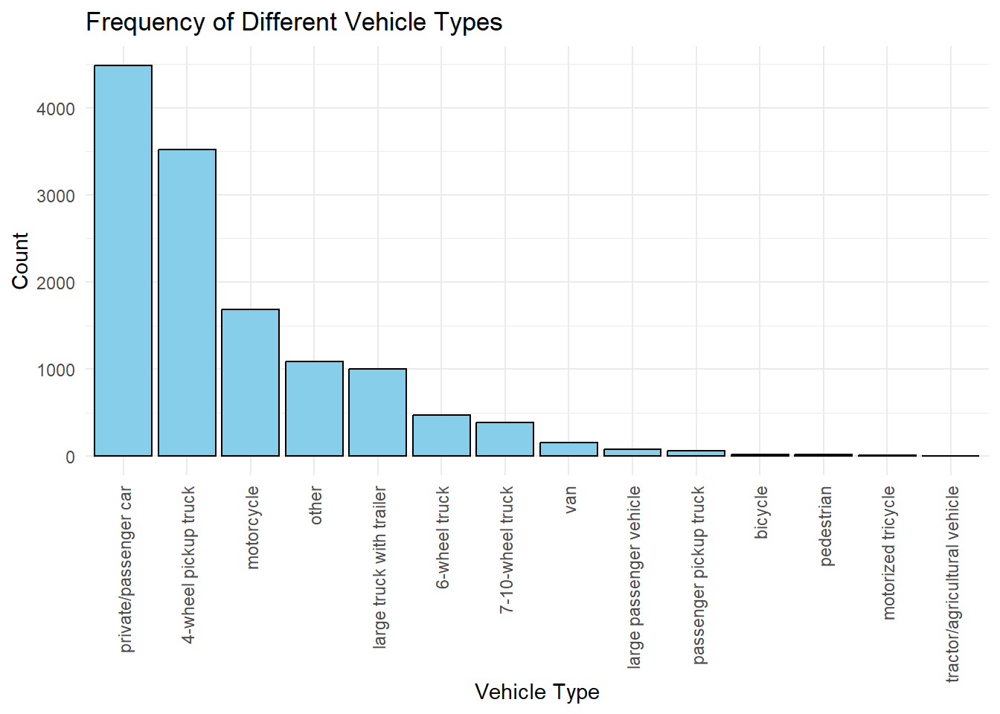
The above chart shows that the majority of the accidents were caused by motor vehicles, only 0.39 % were caused by bicycle, pedestrian, motorized tricycle and agricultural vehicle as calculated below.
For the scope of this analysis, we will focus on motor vehicles related accident and road types that allow motor vehicles access only.
# Filter the records where vehicle_type is either 'pedestrian' or 'bicycle'
subset_vehicle <- bmr_acc[bmr_acc$vehicle_type %in% c("pedestrian", "bicycle","motorized tricycle","tractor/agricultural vehicle"), ]
# Calculate the percentage & print the result
percentage <- (nrow(subset_vehicle) / nrow(bmr_acc)) * 100
print(paste("Percentage of pedestrian and bicycle records:", round(percentage, 2), "%"))[1] "Percentage of pedestrian and bicycle records: 0.39 %"The below code chunk uses st_read() to imports the administrative boundaries at province level (level 1) and filter for provinces in Bangkok Metropolitan Region.
bmr_prov = st_read(dsn = "data/rawdata",layer = "tha_admbnda_adm1_rtsd_20220121") %>%
filter(ADM1_EN %in% c("Bangkok","Nakhon Pathom", "Pathum Thani","Nonthaburi", "Samut Prakan", "Samut Sakhon"))The output is written to rds file to avoid repeating initial transformation steps.
write_rds(bmr_prov, "data/rds/bmr_prov.rds")Next we read from rds file using read_rds().
bmr_prov = read_rds("data/rds/bmr_prov.rds")and reproject to Thailand projected coordinate system using st_transform(). The output is assigned to bmr_boundary.
bmr_boundary = st_transform(bmr_prov, crs = 32647)Checking the content and CRS of this sf data frame yields the below:
The event object
bmr_boundaryis in POLYGON geometry type with dimension XY, which is as expected for boundary object.CRS is set to EPSG 32647 as expected.
bmr_boundarySimple feature collection with 6 features and 16 fields
Geometry type: MULTIPOLYGON
Dimension: XY
Bounding box: xmin: 587893.5 ymin: 1484414 xmax: 712440.5 ymax: 1579076
Projected CRS: WGS 84 / UTM zone 47N
Shape_Leng Shape_Area ADM1_EN ADM1_TH ADM1_PCODE ADM1_REF
1 2.417227 0.13133873 Bangkok กรุงเทพมหานคร TH10 <NA>
2 1.695100 0.07926199 Samut Prakan สมุทรปราการ TH11 <NA>
3 1.251111 0.05323766 Nonthaburi นนทบุรี TH12 <NA>
4 1.884945 0.12698345 Pathum Thani ปทุมธานี TH13 <NA>
5 2.463030 0.17891420 Nakhon Pathom นครปฐม TH73 <NA>
6 1.566369 0.07155983 Samut Sakhon สมุทรสาคร TH74 <NA>
ADM1ALT1EN ADM1ALT2EN ADM1ALT1TH ADM1ALT2TH ADM0_EN ADM0_TH ADM0_PCODE
1 <NA> <NA> <NA> <NA> Thailand ประเทศไทย TH
2 <NA> <NA> <NA> <NA> Thailand ประเทศไทย TH
3 <NA> <NA> <NA> <NA> Thailand ประเทศไทย TH
4 <NA> <NA> <NA> <NA> Thailand ประเทศไทย TH
5 <NA> <NA> <NA> <NA> Thailand ประเทศไทย TH
6 <NA> <NA> <NA> <NA> Thailand ประเทศไทย TH
date validOn validTo geometry
1 2019-02-18 2022-01-22 -001-11-30 MULTIPOLYGON (((674339.8 15...
2 2019-02-18 2022-01-22 -001-11-30 MULTIPOLYGON (((687139.8 15...
3 2019-02-18 2022-01-22 -001-11-30 MULTIPOLYGON (((644817.9 15...
4 2019-02-18 2022-01-22 -001-11-30 MULTIPOLYGON (((704086 1575...
5 2019-02-18 2022-01-22 -001-11-30 MULTIPOLYGON (((631987.6 15...
6 2019-02-18 2022-01-22 -001-11-30 MULTIPOLYGON (((641549.1 15...st_crs(bmr_boundary)Coordinate Reference System:
User input: EPSG:32647
wkt:
PROJCRS["WGS 84 / UTM zone 47N",
BASEGEOGCRS["WGS 84",
ENSEMBLE["World Geodetic System 1984 ensemble",
MEMBER["World Geodetic System 1984 (Transit)"],
MEMBER["World Geodetic System 1984 (G730)"],
MEMBER["World Geodetic System 1984 (G873)"],
MEMBER["World Geodetic System 1984 (G1150)"],
MEMBER["World Geodetic System 1984 (G1674)"],
MEMBER["World Geodetic System 1984 (G1762)"],
MEMBER["World Geodetic System 1984 (G2139)"],
ELLIPSOID["WGS 84",6378137,298.257223563,
LENGTHUNIT["metre",1]],
ENSEMBLEACCURACY[2.0]],
PRIMEM["Greenwich",0,
ANGLEUNIT["degree",0.0174532925199433]],
ID["EPSG",4326]],
CONVERSION["UTM zone 47N",
METHOD["Transverse Mercator",
ID["EPSG",9807]],
PARAMETER["Latitude of natural origin",0,
ANGLEUNIT["degree",0.0174532925199433],
ID["EPSG",8801]],
PARAMETER["Longitude of natural origin",99,
ANGLEUNIT["degree",0.0174532925199433],
ID["EPSG",8802]],
PARAMETER["Scale factor at natural origin",0.9996,
SCALEUNIT["unity",1],
ID["EPSG",8805]],
PARAMETER["False easting",500000,
LENGTHUNIT["metre",1],
ID["EPSG",8806]],
PARAMETER["False northing",0,
LENGTHUNIT["metre",1],
ID["EPSG",8807]]],
CS[Cartesian,2],
AXIS["(E)",east,
ORDER[1],
LENGTHUNIT["metre",1]],
AXIS["(N)",north,
ORDER[2],
LENGTHUNIT["metre",1]],
USAGE[
SCOPE["Navigation and medium accuracy spatial referencing."],
AREA["Between 96°E and 102°E, northern hemisphere between equator and 84°N, onshore and offshore. China. Indonesia. Laos. Malaysia - West Malaysia. Mongolia. Myanmar (Burma). Russian Federation. Thailand."],
BBOX[0,96,84,102]],
ID["EPSG",32647]]We use tmap to plot the output and can see the 6 provinces of BMR has been plotted correctly.
tm_shape(bmr_boundary) +
tm_polygons() +
tm_text("ADM1_EN", size = 0.5)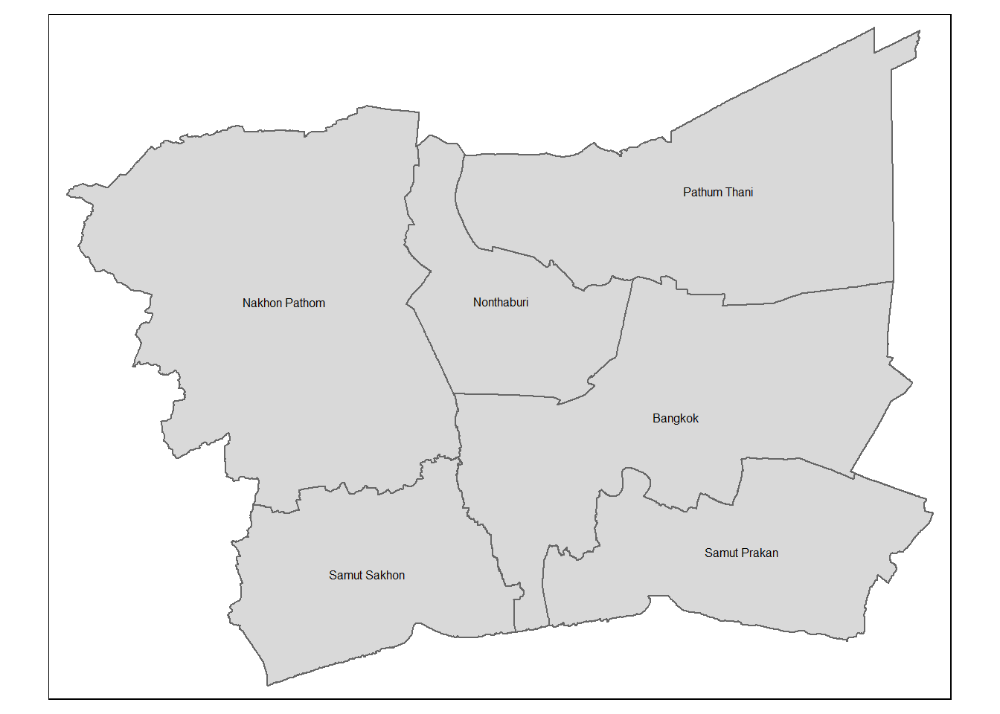
The below code chunk carries out the following steps:
st_read(): read in the shapefile exported from OpenStreetMapst_set_crs(): as the original datataset CRS is NA, we use st_set_crs() to assign to EPSG 4326 of WGS84 geodetic coordinate systemst_intersection(): filter for roads inside BMR boundary only.
bmr_road = st_read(dsn = "data/rawdata",layer = "hotosm_tha_roads_lines_shp") %>%
st_set_crs(4326) %>%
st_intersection(bmr_prov)We write the output into rds file using below code chunk.
write_rds(bmr_road, "data/rds/bmr_road.rds")As the OSM data include exhaustive road types (under column highway), we will filter for road types that allow motor vehicles access only. According to WikiProject Thailand, we filter for the below highway classification where motorcycle and car can access.
The below code chunk uses:
read_rds()to read from rds filefilter(): filter for relevant road typesst_transform(): reproject to Thailand Projected CRS.
bmr_road_ft = read_rds("data/rds/bmr_road.rds") %>%
filter(highway %in% c("motorway", "motorway_link", "trunk","trunk_link","primary","primary_link","secondary","secondary_link","tertiary","tertiary_link", "unclassified","living_street", "road", "residential")) %>%
st_transform(crs = 32647)We rrite the transformed road data to rds file using write_rds().
write_rds(bmr_road_ft, "data/rds/network.rds")Next we read from rds file using read_rds() and assigned the output to network object.
network = read_rds("data/rds/network.rds")We use tm_shape() and tm_lines() to plot the road network for a quick view.
tm_shape(network) +
tm_lines()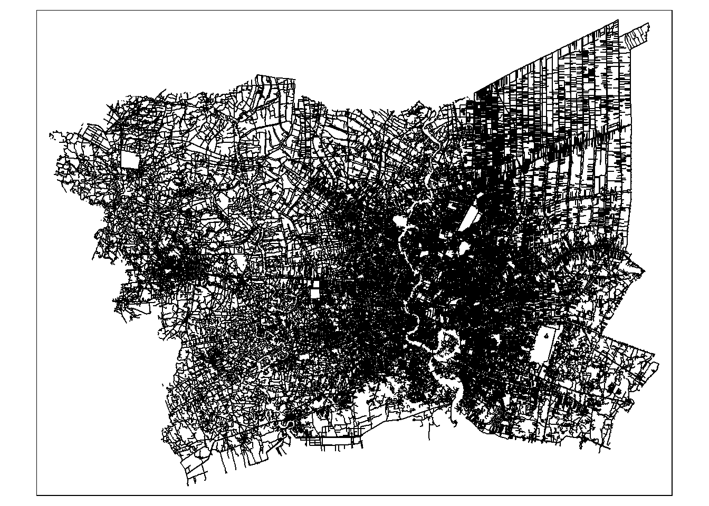
The network is still too dense to be observable. The frequency of different highway classification is plotted as below for further investigation.
ggplot(data = network, aes(x = fct_infreq(highway))) +
geom_bar(fill = "skyblue", color = "black") + # Bar plot with colored bars
labs(title = "Frequency of Different Highway Classes",
x = "Highway Class",
y = "Count") +
theme_minimal() +
theme(axis.text.x = element_text(angle = 90, hjust = 1, vjust = 0.5)) 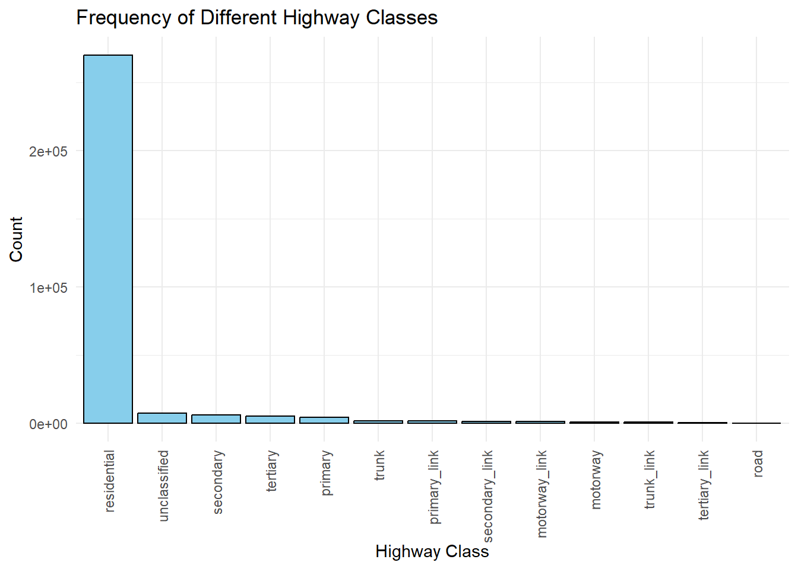
It can be seen that residential class takes up the majority number of records. As defined in WikiProject Thailand, residential class includes roads “within a residential area that gives the public access to one or multiple residences. Also used for roads within a gated housing estate (add access=private). Residential roads are typically short in length and often named.” As these roads are inside residential area and usually short, we assume the number of traffic accidents happening on this type of road is small.
We exclude highway=residential from the network sf object using below code chunk.
network = filter(network, ! highway %in% c("residential"))Checking the content and CRS of network sf data frame yields the below:
The object is in GEOMETRY geometry type with dimension XY, while NKDE analysis requires LINESTRING geometry type.
CRS is set to EPSG 32647 as expected.
networkSimple feature collection with 33100 features and 30 fields
Geometry type: GEOMETRY
Dimension: XY
Bounding box: xmin: 590124.8 ymin: 1484506 xmax: 712235 ymax: 1579041
Projected CRS: WGS 84 / UTM zone 47N
First 10 features:
name name_en highway surface smoothness
1 ถนนฉลองกรุง Chalong Krung Road secondary paved <NA>
3 <NA> <NA> secondary_link <NA> <NA>
5 ถนนฉลองกรุง Chalong Krung Road secondary concrete <NA>
869 ถนนประชาสงเคราะห์ Pracha Songkhro Road tertiary asphalt <NA>
1030 <NA> <NA> secondary_link <NA> <NA>
1099 ถนนวิภาวดีรังสิต Vibhavadi Rangsit Road secondary <NA> <NA>
1101 ถนนดินแดง Din Daeng Road primary <NA> <NA>
1104 ถนนวิภาวดีรังสิต Vibhavadi Rangsit Road secondary <NA> <NA>
1106 ถนนดินแดง Din Daeng Road primary <NA> <NA>
1108 <NA> <NA> primary_link <NA> <NA>
width lanes oneway bridge layer source name_th osm_id
1 <NA> <NA> yes <NA> <NA> <NA> ถนนฉลองกรุง 1125681229
3 <NA> <NA> yes <NA> <NA> <NA> <NA> 472283206
5 <NA> 2 yes yes 1 Bing ถนนฉลองกรุง 116847248
869 <NA> <NA> <NA> <NA> <NA> <NA> ถนนประชาสงเคราะห์ 25933535
1030 <NA> <NA> yes yes 1 Bing <NA> 97092142
1099 <NA> <NA> yes <NA> <NA> <NA> ถนนวิภาวดีรังสิต 835519345
1101 <NA> <NA> yes <NA> <NA> <NA> ถนนดินแดง 1055365750
1104 <NA> <NA> yes <NA> <NA> <NA> ถนนวิภาวดีรังสิต 1306889182
1106 <NA> <NA> yes <NA> <NA> <NA> ถนนดินแดง 1306889184
1108 <NA> <NA> yes <NA> <NA> <NA> <NA> 1306889186
osm_type Shape_Leng Shape_Area ADM1_EN ADM1_TH ADM1_PCODE ADM1_REF
1 ways_line 2.417227 0.1313387 Bangkok กรุงเทพมหานคร TH10 <NA>
3 ways_line 2.417227 0.1313387 Bangkok กรุงเทพมหานคร TH10 <NA>
5 ways_line 2.417227 0.1313387 Bangkok กรุงเทพมหานคร TH10 <NA>
869 ways_line 2.417227 0.1313387 Bangkok กรุงเทพมหานคร TH10 <NA>
1030 ways_line 2.417227 0.1313387 Bangkok กรุงเทพมหานคร TH10 <NA>
1099 ways_line 2.417227 0.1313387 Bangkok กรุงเทพมหานคร TH10 <NA>
1101 ways_line 2.417227 0.1313387 Bangkok กรุงเทพมหานคร TH10 <NA>
1104 ways_line 2.417227 0.1313387 Bangkok กรุงเทพมหานคร TH10 <NA>
1106 ways_line 2.417227 0.1313387 Bangkok กรุงเทพมหานคร TH10 <NA>
1108 ways_line 2.417227 0.1313387 Bangkok กรุงเทพมหานคร TH10 <NA>
ADM1ALT1EN ADM1ALT2EN ADM1ALT1TH ADM1ALT2TH ADM0_EN ADM0_TH ADM0_PCODE
1 <NA> <NA> <NA> <NA> Thailand ประเทศไทย TH
3 <NA> <NA> <NA> <NA> Thailand ประเทศไทย TH
5 <NA> <NA> <NA> <NA> Thailand ประเทศไทย TH
869 <NA> <NA> <NA> <NA> Thailand ประเทศไทย TH
1030 <NA> <NA> <NA> <NA> Thailand ประเทศไทย TH
1099 <NA> <NA> <NA> <NA> Thailand ประเทศไทย TH
1101 <NA> <NA> <NA> <NA> Thailand ประเทศไทย TH
1104 <NA> <NA> <NA> <NA> Thailand ประเทศไทย TH
1106 <NA> <NA> <NA> <NA> Thailand ประเทศไทย TH
1108 <NA> <NA> <NA> <NA> Thailand ประเทศไทย TH
date validOn validTo geometry
1 2019-02-18 2022-01-22 -001-11-30 LINESTRING (693686.1 151979...
3 2019-02-18 2022-01-22 -001-11-30 LINESTRING (692949.1 151886...
5 2019-02-18 2022-01-22 -001-11-30 LINESTRING (692810.8 151863...
869 2019-02-18 2022-01-22 -001-11-30 LINESTRING (668360.2 152245...
1030 2019-02-18 2022-01-22 -001-11-30 LINESTRING (652536.6 152423...
1099 2019-02-18 2022-01-22 -001-11-30 LINESTRING (667716.6 152278...
1101 2019-02-18 2022-01-22 -001-11-30 LINESTRING (667485.1 152210...
1104 2019-02-18 2022-01-22 -001-11-30 LINESTRING (667822.4 152298...
1106 2019-02-18 2022-01-22 -001-11-30 LINESTRING (667418.7 152214...
1108 2019-02-18 2022-01-22 -001-11-30 LINESTRING (667434.6 152210...st_crs(network)Coordinate Reference System:
User input: EPSG:32647
wkt:
PROJCRS["WGS 84 / UTM zone 47N",
BASEGEOGCRS["WGS 84",
ENSEMBLE["World Geodetic System 1984 ensemble",
MEMBER["World Geodetic System 1984 (Transit)"],
MEMBER["World Geodetic System 1984 (G730)"],
MEMBER["World Geodetic System 1984 (G873)"],
MEMBER["World Geodetic System 1984 (G1150)"],
MEMBER["World Geodetic System 1984 (G1674)"],
MEMBER["World Geodetic System 1984 (G1762)"],
MEMBER["World Geodetic System 1984 (G2139)"],
ELLIPSOID["WGS 84",6378137,298.257223563,
LENGTHUNIT["metre",1]],
ENSEMBLEACCURACY[2.0]],
PRIMEM["Greenwich",0,
ANGLEUNIT["degree",0.0174532925199433]],
ID["EPSG",4326]],
CONVERSION["UTM zone 47N",
METHOD["Transverse Mercator",
ID["EPSG",9807]],
PARAMETER["Latitude of natural origin",0,
ANGLEUNIT["degree",0.0174532925199433],
ID["EPSG",8801]],
PARAMETER["Longitude of natural origin",99,
ANGLEUNIT["degree",0.0174532925199433],
ID["EPSG",8802]],
PARAMETER["Scale factor at natural origin",0.9996,
SCALEUNIT["unity",1],
ID["EPSG",8805]],
PARAMETER["False easting",500000,
LENGTHUNIT["metre",1],
ID["EPSG",8806]],
PARAMETER["False northing",0,
LENGTHUNIT["metre",1],
ID["EPSG",8807]]],
CS[Cartesian,2],
AXIS["(E)",east,
ORDER[1],
LENGTHUNIT["metre",1]],
AXIS["(N)",north,
ORDER[2],
LENGTHUNIT["metre",1]],
USAGE[
SCOPE["Navigation and medium accuracy spatial referencing."],
AREA["Between 96°E and 102°E, northern hemisphere between equator and 84°N, onshore and offshore. China. Indonesia. Laos. Malaysia - West Malaysia. Mongolia. Myanmar (Burma). Russian Federation. Thailand."],
BBOX[0,96,84,102]],
ID["EPSG",32647]]The below code chunk converts the the geometry type to LINESTRING using st_cast().
network = st_cast(network, "LINESTRING")We check if data contains any duplicated record using anyDuplicated() . The return index is 0 indicating there is no duplicated records in network sf data frame.
anyDuplicated(network)[1] 03.2 Data Wrangling
As stated in the Objective section, road traffic accidents are generally caused by two main factors: behavioral and environmental. Behavioral factors, which are often the primary cause, can be divided into driver behavior (driving style) and driver performance (driving skills) (Elander, West, & French, 1993). Environmental factors include conditions like poor visibility due to weather (e.g., heavy rain or fog) and hazardous road features such as sharp bends, slippery slopes, or blind spots.
In this section, we perform additional mapping on the columns relevant to these factors in bmr_acc sf data frame.
First we check the frequency of different accident presume causes using below code chunk:
group_by(): group the records by
presumed_causecolumnsummarise(): returns 1 row representing the count of records under each presumed cause.
cause_counts <- bmr_acc %>%
group_by(presumed_cause) %>%
summarise(count = n()) %>%
ungroup()
cause_countsSimple feature collection with 40 features and 2 fields
Geometry type: GEOMETRY
Dimension: XY
Bounding box: xmin: 591277.5 ymin: 1486846 xmax: 710166.1 ymax: 1576520
Projected CRS: WGS 84 / UTM zone 47N
# A tibble: 40 × 3
presumed_cause count geometry
<chr> <int> <GEOMETRY [m]>
1 abrupt lane change 59 MULTIPOINT ((603057.8 15…
2 brake/anti-lock brake system failure 7 MULTIPOINT ((665762 1511…
3 cutting in closely by people/vehicles/animals 621 MULTIPOINT ((595540.6 15…
4 dangerous curve 14 MULTIPOINT ((640057.9 15…
5 debris/obstruction on the road 29 MULTIPOINT ((640235.4 15…
6 disabled vehicle without proper signals 1 POINT (639212.7 1509212)
7 disabled vehicle without proper signals/signs 3 MULTIPOINT ((654036.8 15…
8 driving in the wrong lane 6 MULTIPOINT ((623601.1 14…
9 driving under the influence of alcohol 118 MULTIPOINT ((607471.8 15…
10 failure to signal enter/exit parking 5 MULTIPOINT ((622165.9 15…
# ℹ 30 more rowsAs there are many causes with a small counts, the below code chunk is used to map all causes with records count smaller than or equal to 50 to other cause to avoid crowding the visualization with too many insignificant variables later. The modified mapping is save in presumed_cause_rd column.
# Identify causes with less than 50 records
rare_causes <- cause_counts %>%
filter(count <= 50) %>%
pull(presumed_cause)
# Map those rare causes to "other cause"
bmr_acc <- bmr_acc %>%
mutate(presumed_cause_rd = ifelse(presumed_cause %in% rare_causes, "other cause", presumed_cause))We check the cause count again.
cause_counts_rd <- bmr_acc %>%
group_by(presumed_cause_rd) %>%
summarise(count = n()) %>%
ungroup()
cause_counts_rdSimple feature collection with 11 features and 2 fields
Geometry type: MULTIPOINT
Dimension: XY
Bounding box: xmin: 591277.5 ymin: 1486846 xmax: 710166.1 ymax: 1576520
Projected CRS: WGS 84 / UTM zone 47N
# A tibble: 11 × 3
presumed_cause_rd count geometry
<chr> <int> <MULTIPOINT [m]>
1 abrupt lane change 59 ((603057.8 1533623), (63…
2 cutting in closely by people/vehicles/animals 621 ((595540.6 1542724), (59…
3 driving under the influence of alcohol 118 ((607471.8 1545956), (61…
4 falling asleep 221 ((597876.3 1547500), (60…
5 other 957 ((624456.5 1494214), (63…
6 other cause 270 ((599469.8 1542071), (60…
7 running red lights/traffic signals 96 ((610783.1 1530716), (61…
8 speeding 10143 ((593843.8 1550868), (59…
9 tailgating 83 ((622420.1 1491733), (64…
10 unfamiliarity with the route/unskilled drivi… 53 ((591277.5 1545514), (62…
11 vehicle equipment failure 365 ((606366 1562577), (6066…We can see the individual rare causes are mapped to other cause already.
First we check the frequency of different weather conditions using below code chunk:
group_by(): group the records by
weather_conditioncolumnsummarise(): returns 1 row representing the count of records under each weather condition.
weather_counts <- bmr_acc %>%
group_by(weather_condition) %>%
summarise(count = n()) %>%
ungroup()
weather_countsSimple feature collection with 7 features and 2 fields
Geometry type: GEOMETRY
Dimension: XY
Bounding box: xmin: 591277.5 ymin: 1486846 xmax: 710166.1 ymax: 1576520
Projected CRS: WGS 84 / UTM zone 47N
# A tibble: 7 × 3
weather_condition count geometry
<chr> <int> <GEOMETRY [m]>
1 clear 11711 MULTIPOINT ((591277.5 1545514), (593843.8 1550868), (…
2 dark 81 MULTIPOINT ((629588.3 1507077), (644784.6 1533981), (…
3 foggy 4 MULTIPOINT ((655920.3 1511008), (666583.8 1509141), (…
4 land slide 1 POINT (666736.7 1509549)
5 natural disaster 1 POINT (650910.3 1540963)
6 other 22 MULTIPOINT ((639624 1552092), (649315 1550117), (6494…
7 rainy 1166 MULTIPOINT ((604435.1 1525464), (604930.8 1525557), (…We can see that 90% of accidents (over total 12,986 records) happened under clear weather and 7.7% happened under rainy weather. This signifies majority of road accidents in BMR may not be due to weather.
As other weather condition has relative small counts, we map all these conditions to other condition using below code chunk. The modified mapping is saved in weather_rd column.
weather_other <- c("dark", "foggy", "land slide", "natural disaster", "other")
# Map those rare condition to "other condition"
bmr_acc <- bmr_acc %>%
mutate(weather_rd = ifelse(weather_condition %in% weather_other, "other condition", weather_condition))
# Check the count again
weather_counts_rd <- bmr_acc %>%
group_by(weather_rd) %>%
summarise(count = n())
weather_counts_rdSimple feature collection with 3 features and 2 fields
Geometry type: MULTIPOINT
Dimension: XY
Bounding box: xmin: 591277.5 ymin: 1486846 xmax: 710166.1 ymax: 1576520
Projected CRS: WGS 84 / UTM zone 47N
# A tibble: 3 × 3
weather_rd count geometry
<chr> <int> <MULTIPOINT [m]>
1 clear 11711 ((591277.5 1545514), (593843.8 1550868), (595042.2 1550…
2 other condition 109 ((629588.3 1507077), (639624 1552092), (644784.6 153398…
3 rainy 1166 ((604435.1 1525464), (604930.8 1525557), (604978 152556…We can see the remaining conditions are mapped to other condition already.
First we check the frequency of different road and slope description combination using below code chunk:
group_by(): group the records by
road_descroptionandslope_descriptioncolumnssummarise(): returns 1 row representing the count of records under each combination.
# Count the occurrences of each road and slope description combination
road_counts <- bmr_acc %>%
group_by(road_description, slope_description) %>%
summarise(count = n()) %>%
ungroup()`summarise()` has grouped output by 'road_description'. You can override using
the `.groups` argument.# Calculate the percentage of occurrences
total_count <- sum(road_counts$count)
road_counts <- road_counts %>%
mutate(percentage = round((count / total_count) * 100,2))
# View the result
road_countsSimple feature collection with 19 features and 4 fields
Geometry type: MULTIPOINT
Dimension: XY
Bounding box: xmin: 591277.5 ymin: 1486846 xmax: 710166.1 ymax: 1576520
Projected CRS: WGS 84 / UTM zone 47N
# A tibble: 19 × 5
road_description slope_description count geometry percentage
* <chr> <chr> <int> <MULTIPOINT [m]> <dbl>
1 connecting to p… other 8 ((595545.3 1542719), (61… 0.06
2 connecting to p… other 43 ((606712.6 1557002), (60… 0.33
3 connecting to s… other 4 ((646878.1 1550240), (66… 0.03
4 four-way inters… other 6 ((616900.4 1556213), (62… 0.05
5 grade-separated… other 150 ((654173 1525967), (6560… 1.16
6 merge lane other 11 ((665780.8 1524036), (66… 0.08
7 other other 1004 ((604914.7 1548870), (60… 7.73
8 roundabout other 3 ((614608.3 1523654), (65… 0.02
9 sharp curve no slope 9 ((627908.6 1522233), (63… 0.07
10 sharp curve slope area 32 ((621201.3 1498072), (62… 0.25
11 straight road no slope 10221 ((591277.5 1545514), (59… 78.7
12 straight road other 712 ((603057.8 1533623), (61… 5.48
13 straight road slope area 151 ((642026.9 1499283), (65… 1.16
14 t-intersection other 66 ((599469.8 1542071), (61… 0.51
15 u-turn area other 5 ((641181.3 1509733), (66… 0.04
16 wide curve no slope 347 ((605960.9 1537813), (60… 2.67
17 wide curve other 90 ((655680.3 1506877), (65… 0.69
18 wide curve slope area 51 ((652382.4 1524279), (65… 0.39
19 y-intersection other 73 ((629514.6 1526365), (62… 0.56As there are many road and slope condition combination with small counts, we map all these combinations with records count percentage over total number of cases smaller than 1% to other condition keep the focus on the conditions that presented in the majority of the accidents only.
The below code chunk use mutate() to create road_rd column , which has value = other conditions for accidents under conditions with small counts and value = road_description-slope_description otherwise.
# Identify conditions with records percentage less than 1%
rare_conditions <- road_counts %>%
filter(percentage < 1) %>%
mutate(road_condition = paste(road_description, slope_description, sep = "-")) %>%
pull(road_condition)
# Map those rare causes to "other cause"
bmr_acc <- bmr_acc %>%
mutate(road_condition = paste(road_description, slope_description, sep = "-")) %>%
mutate(road_rd = ifelse(road_condition %in% rare_conditions, "other conditions", road_condition))We check the count and percentage in road_rd column using below code chunk.
# Count the occurrences of each road and slop description combination
road_counts_rd <- bmr_acc %>%
group_by(road_rd) %>%
summarise(count = n())
# Calculate the percentage of occurrences
total_count <- sum(road_counts_rd$count)
road_counts_rd <- road_counts_rd %>%
mutate(percentage = round((count / total_count) * 100,2))
# View the result
road_counts_rdSimple feature collection with 7 features and 3 fields
Geometry type: MULTIPOINT
Dimension: XY
Bounding box: xmin: 591277.5 ymin: 1486846 xmax: 710166.1 ymax: 1576520
Projected CRS: WGS 84 / UTM zone 47N
# A tibble: 7 × 4
road_rd count geometry percentage
* <chr> <int> <MULTIPOINT [m]> <dbl>
1 grade-separated intersection/ramps… 150 ((654173 1525967), (6560… 1.16
2 other conditions 401 ((595545.3 1542719), (59… 3.09
3 other-other 1004 ((604914.7 1548870), (60… 7.73
4 straight road-no slope 10221 ((591277.5 1545514), (59… 78.7
5 straight road-other 712 ((603057.8 1533623), (61… 5.48
6 straight road-slope area 151 ((642026.9 1499283), (65… 1.16
7 wide curve-no slope 347 ((605960.9 1537813), (60… 2.67We can see all the rare combinations have been mapped to other-conditions already.
4 Exploratory Data Analysis
4.1 Visualize the Geospatial Data
First we plot the map of traffic accidents in BMR with overlaying road network using different function of tmap package:
tm_polygons(): plot the area boundaries
tm_dots(): plot each accident as a red dot (col = ‘red’) on the map
tm_lines(): plot the lines to represent the road network in BMR
tm_shape(bmr_boundary) +
tm_polygons() +
tm_shape(bmr_acc) +
tm_dots(col = "red") +
tm_shape(network) +
tm_lines()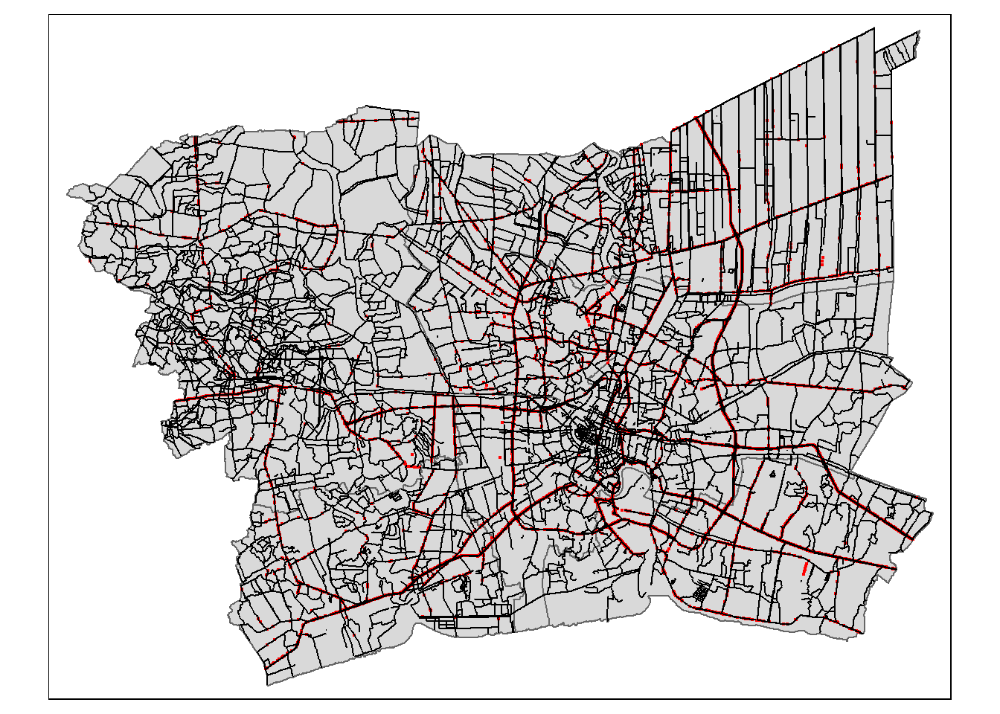
The above map shows most of the accidents points already lie on the network. Although there are a few points still lying off the network, this number is trivial. We can confirm the network sf data frame cover majority of the accident points and can be used for the remaining analysis.
4.2 Visualize Traffic Accidents Data
In this section, we deep dive into traffic accidents data to understand the trend, severity and related cause of traffic accidents in Bangkok Metropolitan Region from 2019 to 2022.
To understand if there is any seasonal factor impacting occurence of traffic accidents in BMR, the below code chunk is uses ggplot() to plot the monthly traffic accidents trend by month by year.
# Group data by year and month, and count the number of accidents
accidents_by_month <- bmr_acc %>%
group_by(year, month_no) %>%
summarise(num_accidents = n())`summarise()` has grouped output by 'year'. You can override using the
`.groups` argument.# Plot the data
ggplot(accidents_by_month, aes(x = month_no, y = num_accidents, color = factor(year), group = year)) +
geom_line() +
labs(title = "Number of Accidents by Month for Each Year",
x = "Month No",
y = "Number of Accidents",
color = "Year") +
scale_x_continuous(breaks = 1:12, labels = month.abb) + # Label months as Jan, Feb, etc.
theme_minimal()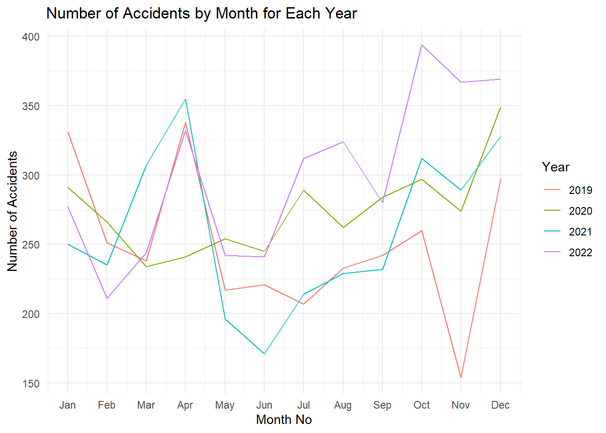
We can observe some similarities in the trend across the 4 years:
April was the month with the highest number of accident in year 2019 and 2021, and second highest in 2022. This may be due to the Songkran festival in April, which is the largest festival in Thailand. The dip in 2020 can be attributed towards travel restriction during Covid.
February-March and May-June were the months with lower number of accidents throughout the year.
The number of accidents had an increasing trend from June to December.
As 2022 is the most recent year with available data and the number of accidents shows a concerning increase towards the end of the year, for the scope of this study we will focus on accidents happening in 2022 only.
The below code chunk uses filter() to filter for accidents recorded in 2022.
bmr_acc = bmr_acc |>
filter(year == 2022)To understand the geopraphic distribution of traffic accidents in BMR, we use ggplot() to plot the number of accidents by province as in below code chunk.
# Group by province and count the number of accidents
accidents_by_province <- bmr_acc %>%
group_by(province_en) %>%
summarise(accident_count = n()) %>%
ungroup()
# Create a column chart
ggplot(accidents_by_province, aes(x = reorder(province_en, -accident_count), y = accident_count)) +
geom_col(fill = "skyblue") +
geom_text(aes(label = accident_count), vjust = -0.5, color = "black", size = 3.5) + # Add data labels
labs(title = "Number of Accidents by Province",
x = "Province",
y = "Number of Accidents") +
theme_minimal() +
theme(axis.text.x = element_text(angle = 90, hjust = 1)) # Rotate x-axis labels for readability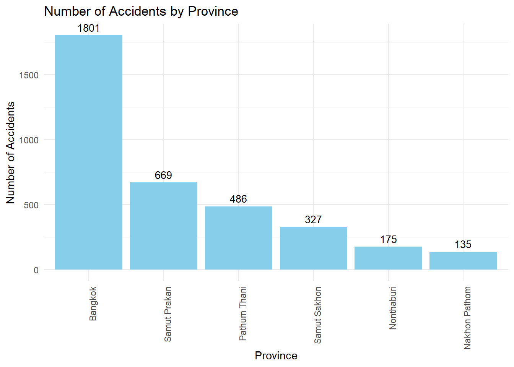
The column chart shows the first 4 provinces already account for 91% of the total number of accidents in 2022. For the remaining analysis we will focus on these 4 provinces only.
The below code chunk filter for these 4 provinces and select the relevant columns using select().
network = network |>
filter(ADM1_EN %in% c("Bangkok", "Pathum Thani", "Samut Prakan", "Samut Sakhon")) |>
select(c("name_en","highway","osm_id","ADM1_EN"))The same filter is applied for the bmr_acc and bmr_boundary sf dataframe as below.
# Traffic accident data frame
bmr_acc = bmr_acc |>
filter(province_en %in% c("Bangkok", "Pathum Thani", "Samut Prakan", "Samut Sakhon"))
# Region boundaries data frame
bmr_boundary = bmr_boundary |>
filter(ADM1_EN %in% c("Bangkok", "Pathum Thani", "Samut Prakan", "Samut Sakhon"))We plot the map again using functions of tmap and can see the 2 provinces Nontha Buri and Nakhon Pathom are properly excluded.
tm_shape(bmr_boundary) +
tm_polygons() +
tm_shape(bmr_acc) +
tm_dots(col = 'red') +
tm_shape(network) +
tm_lines()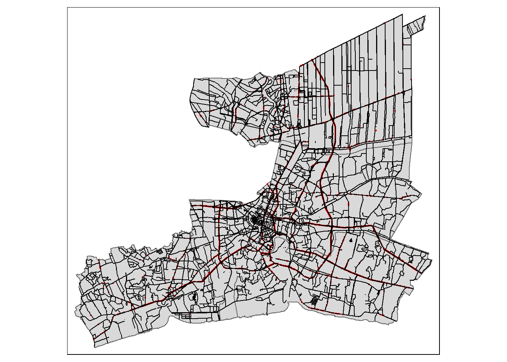
Now we want to understand the spread of accident points along the network. We snap the points to the network and calculate the distance of each point to its nearest neighbor on the network.
First we aggregate the events that are within 30 meters to each other using aggregate_points().
Note: for the distance calculation to work, we need to ensure no point shares the exact same location on the network. Hence the points close to each other needs to be aggregated before proceeding further.
bmr_acc$weight <- 1
bmr_acc_agg <- bmr_acc |>
aggregate_points(30 ,weight = "weight")Next the distance of each even to its nearest neighbor on the network is calculated using network_knn().
knn_dists <- network_knn(origins = bmr_acc_agg,
lines = network,
k = 1,
maxdistance = 2000,
line_weight = "length",
digits = 2, tol = 0.1, verbose = FALSE)We plotting the result using ggplot().
ggplot() +
geom_histogram(aes(x = knn_dists$distances), fill = "skyblue", color = "black", bins = 50) +
labs(x = "distance to nearest neighbour (in meters)")Warning: Removed 57 rows containing non-finite outside the scale range
(`stat_bin()`).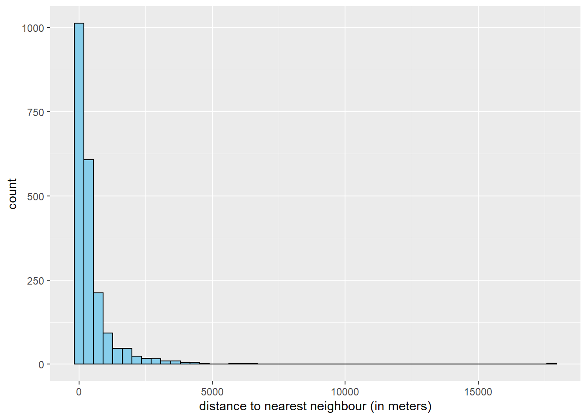
The above histogram shows that there are a few points that are very far from its nearest neighbor. We remove the records with distance larger than 5000 meters and plot the result again using below code chunk.
distances = knn_dists$distances
distance_ft = distances[distances < 5000]
# Plot the histogram
ggplot() +
geom_histogram(aes(x = distance_ft), fill = "skyblue", color = "black", bins = 50) +
labs(x = "Distance to nearest neighbour (in meters)") +
theme_minimal()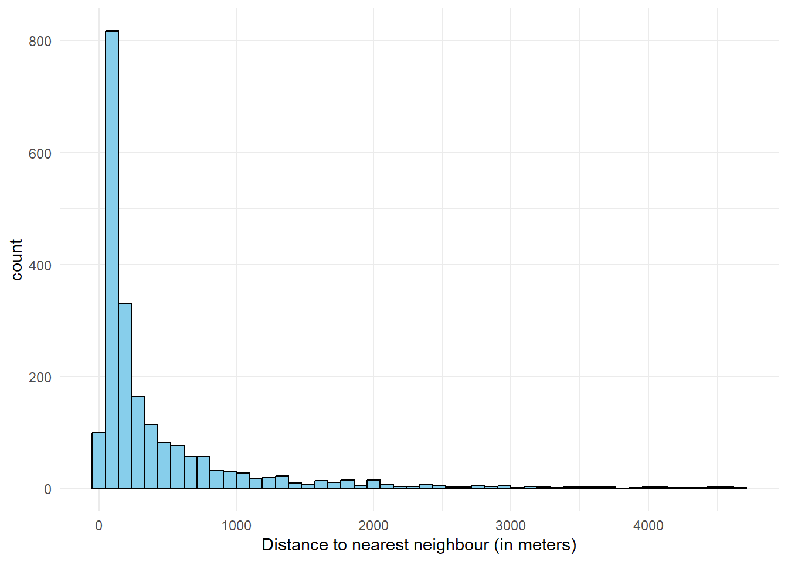
The histogram is right skewed with 85.3% of events (after aggregating events within 30 meters) falls within 1 kilometers from its nearest neighbors. This indicates there are certain hot spots on BMR road network where traffic accidents occur frequently. We will examine these hot spots in the following TNKDE and NKDE analysis.
# Calculate percentage of accidents with nearest neighbor distance lower than 1 kilometer over all accidents in 2022
length(distances[distances < 1000])/length(distances)[1] 0.85288735 Spatio-Temporal Point Pattern Analysis
A spatio-temporal point process is a set of points where each point represents the time and location of an event, such as disease incidence, species sightings, or natural disasters. The analysis of these patterns is increasingly important due to the growth of geographically and temporally indexed data. In the past decade, numerous methods for spatio-temporal point pattern analysis have been developed and implemented in R.
We will use the Spatio-Temporal Kernel Density Estimate (STKDE) method to understand the spatio-temporal dynamics of road accidents in Thailand across different provinces and time during 2022.
5.1 Visualize geographic distribution of traffic accident by month
As we observe some seasonality in the number of traffic accidents by month in the previous section, we further investigate if there is any difference in the location of those accidents by month.
The below code chunk uses multiple functions of tmap to plot the accidents by month. Each accident is represented by a red dot and each province boundary is filled by a different color.
tm_shape(bmr_boundary)+
tm_fill(col = "ADM1_EN", palette = 'Pastel2') +
tm_legend(width = 0.5, height = 0.5) +
tm_shape(network) +
tm_lines(alpha = 0.5) +
tm_shape(bmr_acc) +
tm_dots(size = 0.1, col = 'red') +
tm_facets(by="month_fac",
free.coords=FALSE,
drop.units = TRUE)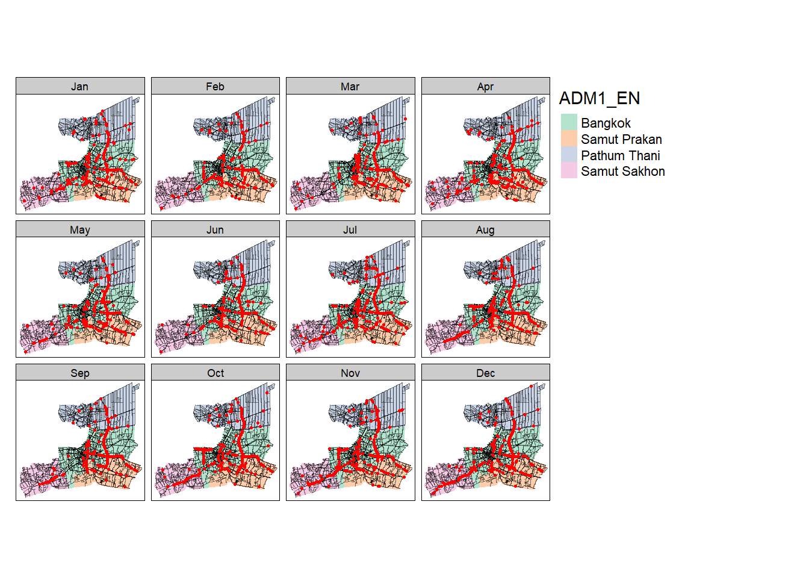
The above maps show that the locations of accidents resembles almost the same pattern across all the months, with many points clustered in these 3 parts of the road network:
Center of Bangkok
Along the vertical road connecting Pathum Thani, Bangkok and Samut Prakan province
Along the horizontal road connecting Samut Sakhon and Bangkok
5.2 Compute STKDE for different time dimensions
In this section, we explore how to compute STKDE using spattemp.density()of sparr package.
As spattemp.density() requires the object in ppp class, first we create an owin object from bmr_boundary to define the observation window for the ppp object using below code chunk.
acc_owin <- as.owin(bmr_boundary)
acc_owinwindow: polygonal boundary
enclosing rectangle: [611104.4, 712440.5] x [1484413.7, 1579076.3] unitsNext, class() of base R is used to confirm if the output is indeed an owin object.
class(acc_owin)[1] "owin"5.2.0.1 Create ppp object
The code chunk below select only the necessary fields (month_no) from the bmr_acc sf data frame and conver to ppp object using as.ppp(). This is because as.ppp() function only requires the mark field and geometry field from sf data frame.
acc_month_ppp = bmr_acc |>
select(month_no) |>
as.ppp()Next we include owin object and check if the output acc_month_owin is in the correct object class. We can see the object is already in ppp class.
acc_month_owin <- acc_month_ppp[acc_owin]
summary(acc_month_owin)Marked planar point pattern: 3283 points
Average intensity 6.70773e-07 points per square unit
*Pattern contains duplicated points*
Coordinates are given to 10 decimal places
marks are numeric, of type 'double'
Summary:
Min. 1st Qu. Median Mean 3rd Qu. Max.
1.00 4.00 7.00 7.05 10.00 12.00
Window: polygonal boundary
single connected closed polygon with 15150 vertices
enclosing rectangle: [611104.4, 712440.5] x [1484413.7, 1579076.3] units
(101300 x 94660 units)
Window area = 4894350000 square units
Fraction of frame area: 0.51plot() of base R is used to plot the owin object. The output map shows proper province boundaries and marked points of 12 months.
plot(acc_month_owin)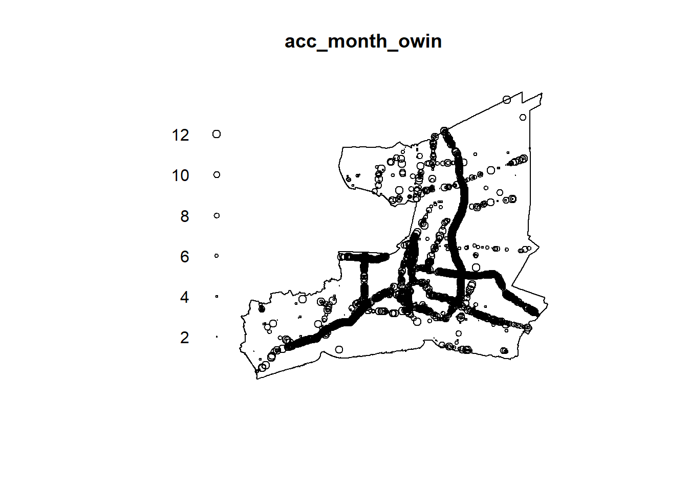
5.2.0.2 Compute Spatio-temporal KDE
Next, spattemp.density() of sparr package is used to compute the STKDE.
acc_month_stkde <- spattemp.density(acc_month_owin)Calculating trivariate smooth...Done.
Edge-correcting...Done.
Conditioning on time...Done.summary(acc_month_stkde)Spatiotemporal Kernel Density Estimate
Bandwidths
h = 3953.323 (spatial)
lambda = 0.0301 (temporal)
No. of observations
3283
Spatial bound
Type: polygonal
2D enclosure: [611104.4, 712440.5] x [1484414, 1579076]
Temporal bound
[1, 12]
Evaluation
128 x 128 x 12 trivariate lattice
Density range: [3.272962e-25, 3.865178e-09]plot() of base R is used to plot the spatio-temporal KDE between January 2022 - December 2022 using below code chunk.
tims <- c(1,2,3,4,5,6,7,8,9,10,11,12)
par(mfcol=c(4,3), mar = c(2, 2, 2, 2))
for(i in tims){
plot(acc_month_stkde, i,
override.par=FALSE,
fix.range=TRUE,
main=paste("KDE at month",i))
}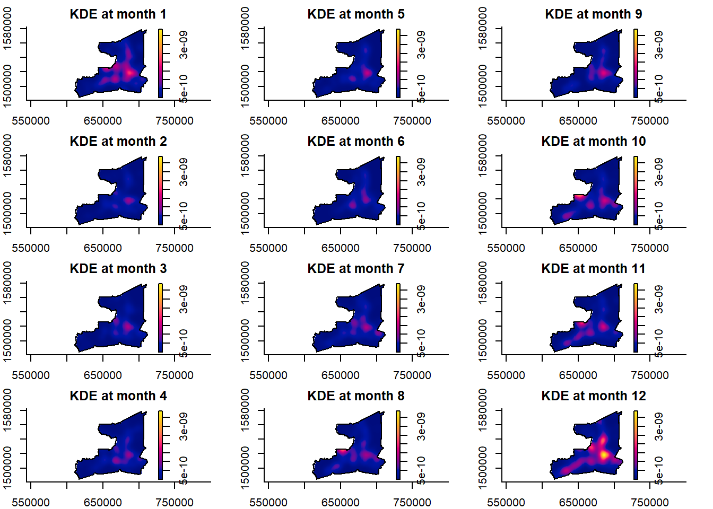
We can observe the highest density in December in Bangkok and Samut Sakhon area, followed by January. From August to November, the density spread more equally across the 4 provinces.
Thailand experiences 3 main seasons:
The wet season from May to October
The cool season from November to February
The hot season from March to May
We can observe that the hot and wet season have lower STKDE compared versus cool season (especially in January and December). This can be partly contributed to cool season being high season for travelling in those areas with high density.
5.2.0.3 Create ppp object
The code chunk below select only the necessary fields (dayofweek) from the bmr_acc sf data frame and conver to ppp object using as.ppp(). This is because as.ppp() function only requires the mark field and geometry field from sf data frame.
acc_day_ppp <- bmr_acc |>
select(dayofweek) |>
as.ppp()Next we include owin object and check if the output acc_day_owin is in the correct object class. We can see the object is already in ppp class.
acc_day_owin <- acc_day_ppp[acc_owin]
summary(acc_day_owin)Marked planar point pattern: 3283 points
Average intensity 6.70773e-07 points per square unit
*Pattern contains duplicated points*
Coordinates are given to 10 decimal places
marks are numeric, of type 'double'
Summary:
Min. 1st Qu. Median Mean 3rd Qu. Max.
1.000 2.000 4.000 4.077 6.000 7.000
Window: polygonal boundary
single connected closed polygon with 15150 vertices
enclosing rectangle: [611104.4, 712440.5] x [1484413.7, 1579076.3] units
(101300 x 94660 units)
Window area = 4894350000 square units
Fraction of frame area: 0.51plot() of base R is used to plot the owin object. The output map shows proper province boundaries and marked points of 7 days in a week.
plot(acc_day_owin)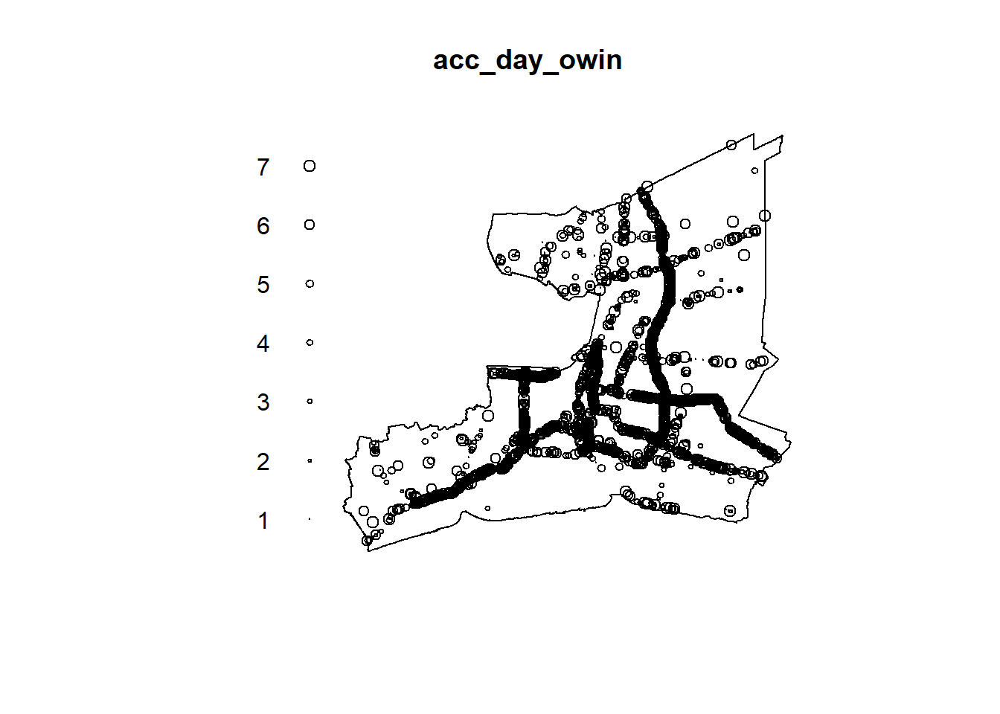
5.2.0.4 Compute Spatio-temporal KDE
Next, spattemp.density() of sparr package is used to compute the STKDE.
acc_day_stkde <- spattemp.density(acc_day_owin)Calculating trivariate smooth...Done.
Edge-correcting...Done.
Conditioning on time...Done.summary(acc_day_stkde)Spatiotemporal Kernel Density Estimate
Bandwidths
h = 3953.323 (spatial)
lambda = 0.013 (temporal)
No. of observations
3283
Spatial bound
Type: polygonal
2D enclosure: [611104.4, 712440.5] x [1484414, 1579076]
Temporal bound
[1, 7]
Evaluation
128 x 128 x 7 trivariate lattice
Density range: [1.848561e-24, 1.301055e-08]plot() of base R is used to plot the spatio-temporal KDE for each day in a week.
tims <- c(1,2,3,4,5,6,7)
wdays <- c("Monday", "Tuesday", "Wednesday", "Thursday", "Friday", "Saturday", "Sunday")
par(mfcol=c(3,3), mar = c(2, 2, 2, 2))
for(i in tims){
plot(acc_day_stkde, i,
override.par=FALSE,
fix.range=TRUE,
main=paste("KDE on",wdays[i]))
}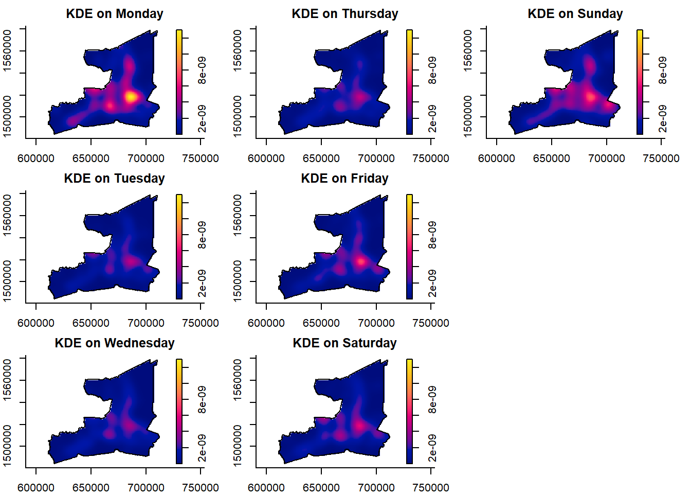
The above maps show that all 4 provinces have areas with high density on Monday (highest in Bangkok), follow by Sunday where high density areas are more spread out. The density is lower during middle of the week (Tuesday to Thursday) and starts to pick up towards the weekend (Friday to Sunday).
5.2.0.5 Create ppp object
The code chunk below select only the necessary fields (hourofday) from the bmr_acc sf data frame and conver to ppp object using as.ppp(). This is because as.ppp() function only requires the mark field and geometry field from sf data frame.
acc_hr_ppp <- bmr_acc |>
select(hourofday) |>
as.ppp()Next we include owin object and check if the output acc_hr_owin is in the correct object class. We can see the object is already in ppp class.
acc_hr_owin <- acc_hr_ppp[acc_owin]
summary(acc_hr_owin)Marked planar point pattern: 3283 points
Average intensity 6.70773e-07 points per square unit
*Pattern contains duplicated points*
Coordinates are given to 10 decimal places
marks are numeric, of type 'integer'
Summary:
Min. 1st Qu. Median Mean 3rd Qu. Max.
0.0 8.0 13.0 12.5 18.0 23.0
Window: polygonal boundary
single connected closed polygon with 15150 vertices
enclosing rectangle: [611104.4, 712440.5] x [1484413.7, 1579076.3] units
(101300 x 94660 units)
Window area = 4894350000 square units
Fraction of frame area: 0.51plot() is used to plot the owin object to examine the correctness of the output object.The output map shows proper province boundaries and marked points of 24 hours in a day.
plot(acc_hr_owin)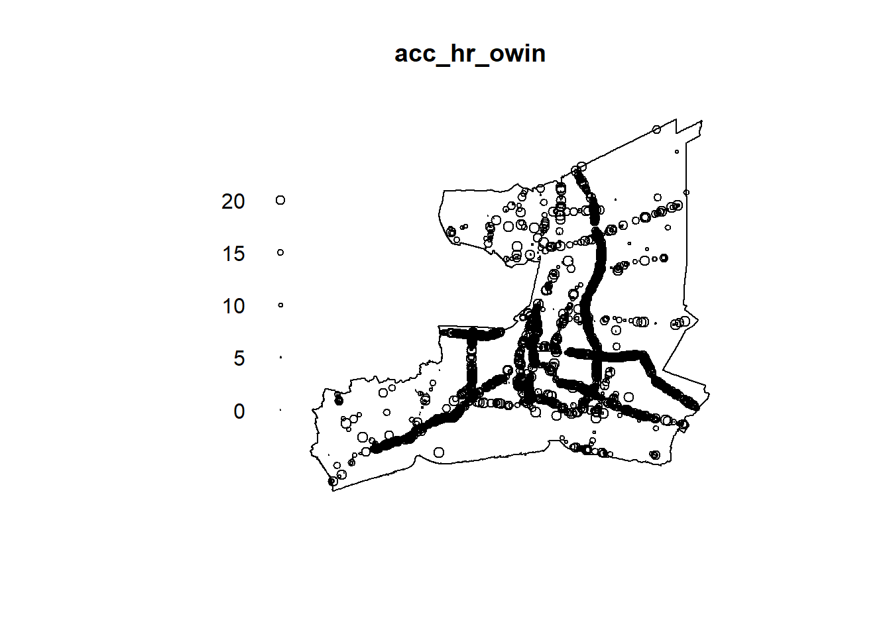
5.2.0.6 Compute Spatio-temporal KDE
Next, spattemp.density() of sparr package is used to compute the STKDE.
acc_hr_stkde <- spattemp.density(acc_hr_owin)Calculating trivariate smooth...Done.
Edge-correcting...Done.
Conditioning on time...Done.summary(acc_hr_stkde)Spatiotemporal Kernel Density Estimate
Bandwidths
h = 3953.323 (spatial)
lambda = 0.0806 (temporal)
No. of observations
3283
Spatial bound
Type: polygonal
2D enclosure: [611104.4, 712440.5] x [1484414, 1579076]
Temporal bound
[0, 23]
Evaluation
128 x 128 x 24 trivariate lattice
Density range: [1.091345e-26, 4.371593e-10]plot() of base R is used to plot the spatio-temporal KDE of the first half of the day (from 0 AM to 12 PM).
tims <- c(0,1,2,3,4,5,6,7,8,9,10,11)
par(mfcol=c(4,3), mar = c(2, 2, 2, 2))
for(i in tims){
plot(acc_hr_stkde, i,
override.par=FALSE,
fix.range=TRUE,
main=paste("KDE at hour",i))
}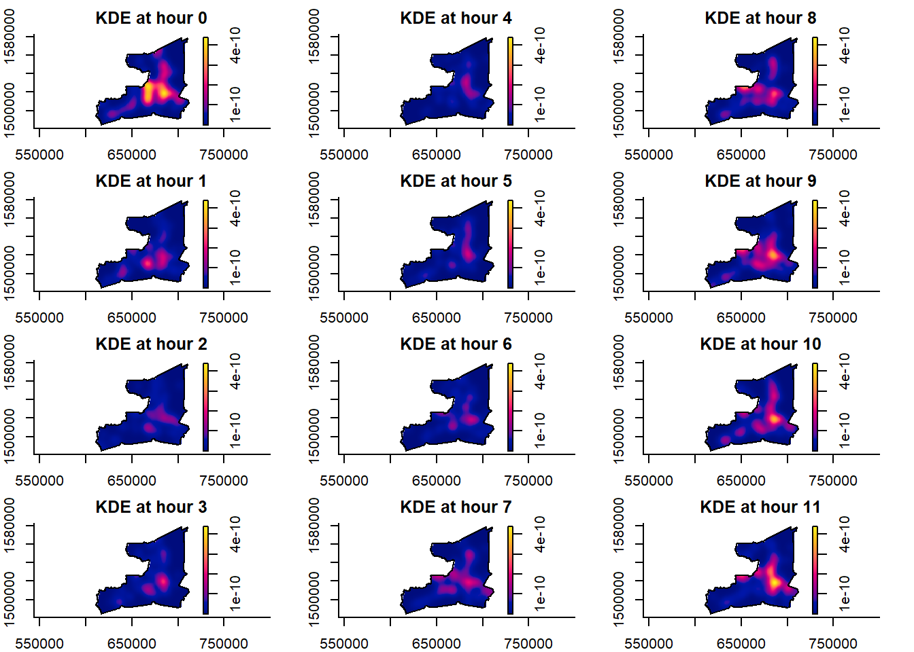
The highest density can be observed at midnight ( around 0 AM) and from 8AM to 11:59AM.
We continue to use plot() of base R to plot the STKDE of the second half of the day.
tims <- c(12,13,14,15,16,17,18,19,20,21,22,23)
par(mfcol=c(4,3), mar = c(2, 2, 2, 2))
for(i in tims){
plot(acc_hr_stkde, i,
override.par=FALSE,
fix.range=TRUE,
main=paste("KDE at hour",i))
}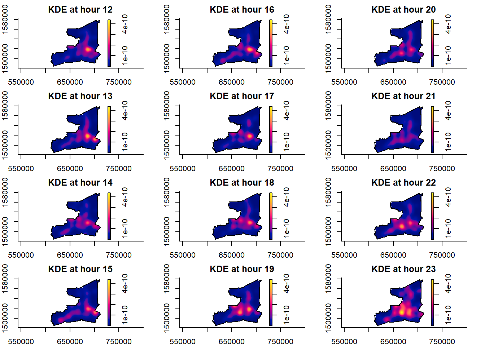
For the remainder of the day, high density can be observed during lunch time (12PM - 13PM), in the evening (16PM - 19PM) and late night (22PM -23PM).
6 Network Spatial Point Patterns Analysis
6.1 Prepare the lixels objects and generate line centre points
Before computing NKDE, the SpatialLines object needs to be divided into lixels (line pixels) with a specified minimum distance. This can be done using the lixelize_lines() function from the spNetwork package, as shown in the code chunk below.
According to the nearest neighbor distance plotted above, the smallest network distance between 2 accident points is under 100 meters. The lixel length and mindist should be larger than 100 meters to ensure these cases can be captured.
lixels <- lixelize_lines(network,
800,
mindist = 400)The followings are observed from the above code chunk.
The length of each lixel (
lx_length) is set to 800 meters.The minimum length of a lixel (
mindist) is set to 400 meters.
After cutting, if the length of the final lixel is shorter than the minimum distance, it is merged with the previous lixel. If mindist = NULL, then it defaults to maxdist/10. Segments that are already shorter than the minimum distance are left unmodified.
Note: The lixelize_lines.mc() function offers multicore support for this process.
Next, lines_center() of spNetwork is used to generate a SpatialPointsDataFrame (i.e. samples) with line centre points as shown in the code chunk below.
samples <- lines_center(lixels)These points are located at center of the lixel based on the length of the lixel.
6.2 Perform NKDE
NKDE is computed using below code chunk, using the following key arguments:
kernel_name = “quartic”: ensure no negative value returned.
method = “simple”: for faster calculation given the data size. Since the
networkcontains many intersections, we acknowledge this simple method may overestimate the density at road intersections.adaptive = FALSE and bw = 500: use fixed bandwidth of 500 meters
agg = 30: aggregate accident points within 30 meters of each other
# Calculate NKDE
densities <- nkde(network,
events = bmr_acc,
w = rep(1, nrow(bmr_acc)),
samples = samples,
kernel_name = "quartic",
bw = 500,
adaptive = FALSE,
div= "bw",
method = "simple",
digits = 1,
tol = 1,
grid_shape = c(2,2),
max_depth = 8,
agg = 30,
sparse = TRUE,
verbose = FALSE)The below code chunk performs the following steps:
Assign the calculated densities to column
densityinsamplessf data frame and multiply by 1000 to convert to density by km.Plot the density value for each lixel centre using multiple functions of tmap.
samples$density <- densities
# rescaling to help the mapping
samples$density <- samples$density*1000
samples2 <- samples[order(samples$density),]
colorRamp <- brewer.pal(n = 10, name = "Spectral")
colorRamp <- rev(colorRamp)
title <- paste0("Traffic accident density by km in 2022,",
"\nwithin a radius of 500 metres")
tm_shape(bmr_boundary) +
tm_polygons() +
tm_shape(network) +
tm_lines("black") +
tm_shape(samples2) +
tm_dots("density", style = "cont", palette = colorRamp, n = 5, size = 0.1) +
tm_layout(legend.outside = TRUE,
main.title = title , main.title.size = 1)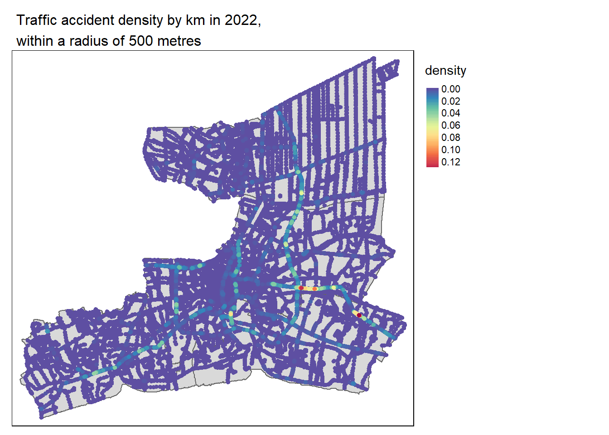
We can see from the above map accidents density is higher across certain roads:
The vertical road connecting Samut Prakan, Bangkok and Pathum Thani.
The horizontal roads connecting Samut Sakhon, Bangkok and Samut Prakan. There are some hot spot on the road in Samut Prakan province as well.
6.3 Network Constrained G- and K-Function Analysis
In this section, we perform complete spatial randomness (CSR) test using kfunctions() of spNetwork package. The null hypothesis is defined as:
H0: The observed spatial point events (i.e traffic accidents) are randomly distributed over the street network in the 4 provinces in BMR.
The CSR test assumes a binomial point process, meaning the centres are randomly and independently distributed. If rejected, it indicates the centres are spatially dependent and form nonrandom patterns.
kfun_acc <- kfunctions(network,
bmr_acc,
start = 0,
end = 1500,
step = 100,
width = 500,
agg = 30,
nsim = 29,
resolution = 50,
verbose = FALSE,
conf_int = 0.05)Note: 9 key arguments used in above code chunk:
lines: A feature collection of linestrings representing the underlying network. The geometries must be simple Linestrings.
points: A
sfdata frame representing points on the network. These points will be snapped on their nearest line.start: A double, the start value for evaluating the k and g functions.
end: A double, the last value for evaluating the k and g functions.
step: A double, specifying the interval between evaluations of the k and g functions.
width: The width of each donut for the g-function.
nsim: An integer for the number of Monte Carlo simulations. Typically, more than 50 simulations are needed for inference.
resolution: A value to reduce calculation time when simulating random points by splitting edges and selecting vertices.
conf_int: A double for setting the confidence interval (default is 0.05).
For more details on these arguments, refer to the spNetwork user guide.
The output of kfunctions() is a list containing:
plotkA: A ggplot2 object representing the k-function values.plotgA: A ggplot2 object representing the g-function values.valuesA: A DataFrame containing the data used to generate the plots.
For example, the ggplot2 object of k-function can be visualized using the following code chunk.
kfun_acc$plotk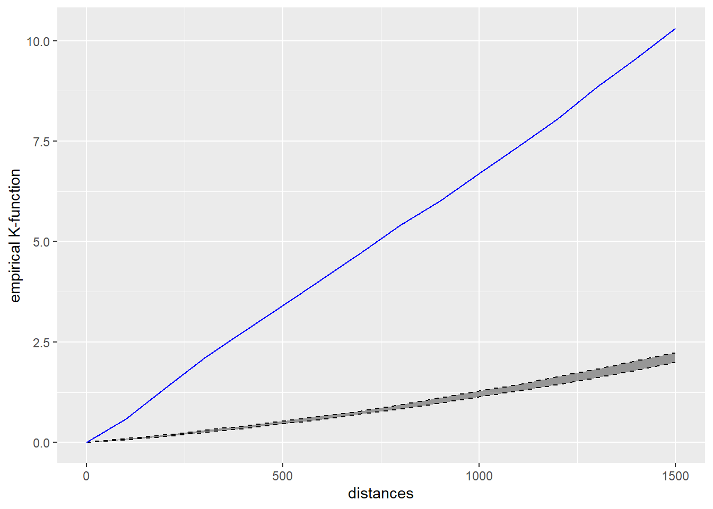
The blue line is the empirical network K-function of traffic accidents in the 4 provinces in BMR. The gray envelop represents the results of the 30 simulations in the confidence interval 2.5% - 97.5%. Since the blue line segment is way above the gray area, we can infer that the accidents are more clustered than what can be expected from a random distribution.
The below code chunk is used to plot the G function.
kfun_acc$plotg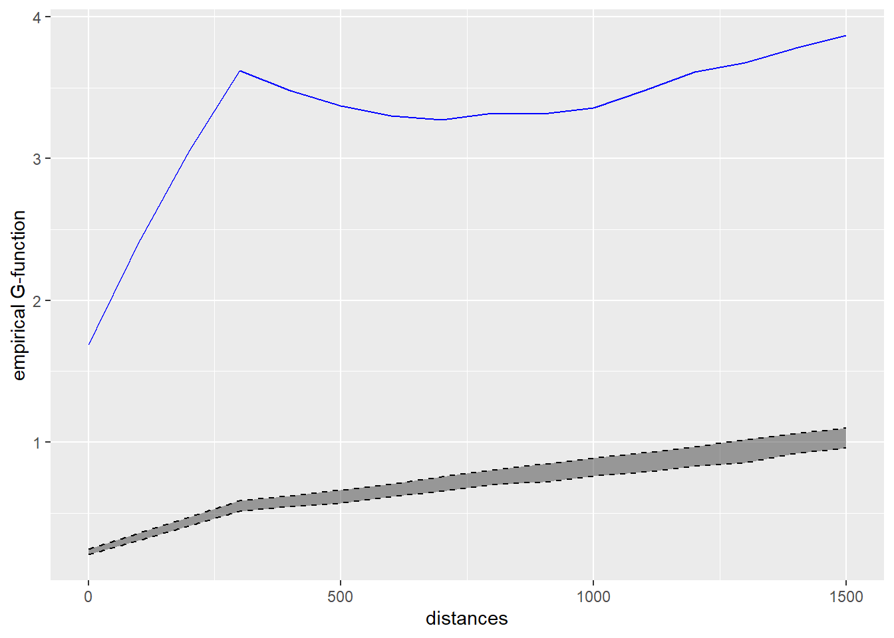
The G-function also demonstrates a clustered distribution. For distance lower than 1 kilometer, a local maximum is observed between 250 to 350 meters. This is consistent with the observations that certain part of the road networks have significantly higher density compared to others.
6.4 Analyze Accidents at high NKDE lixels
First we assign the calculated NKDE to lixel sf data frame and multiply by 1000 to convert to density per km using below code chunk.
lixels$density = densities*1000Next we use summary() to check the quantile distribution of density column.
summary(lixels$density) Min. 1st Qu. Median Mean 3rd Qu. Max.
0.0000000 0.0000000 0.0000000 0.0009879 0.0000000 0.1394524 In this section, we will focus on accidents happening at lixels with density higher than the mean. This is to understand which factors contribute to those parts of the road with above average accident density.
We remove the geometry column from lixels and create a new data frame lixels_df for easier data frame manipulation later on.
lixels_df = st_drop_geometry(lixels)The below code chunk performs the following steps:
Snaps accident points to the nearest lixel within 50 meters using
snapPointsToLines2()and return the respectivelineIDof the closest lixel.left_join()with lixels_df to bring in the density values and other road attributes.Filter for accidents snapped to lixels with density above average.
snapped_accidents = snapPointsToLines2(
bmr_acc,
lixels,
idField = "lineID",
snap_dist = 50) |>
left_join(lixels_df, by = c("nearest_line_id" = "lineID")) |>
filter(density > 0.0009879)6.4.1 Environmental Factors
The environmental factors: road type, weather condition and road condition are visualized using ggplot() as in below code chunks.
# Group by road type and count the number of accidents
accidents_by_road_type <- snapped_accidents %>%
group_by(highway) %>%
summarise(accident_count = n()) %>%
ungroup()
# Create a column chart
ggplot(accidents_by_road_type, aes(x = reorder(highway, -accident_count), y = accident_count)) +
geom_col(fill = "skyblue") +
geom_text(aes(label = accident_count), vjust = -0.5, color = "black", size = 3.5) + # Add data labels
labs(title = "Number of Accidents by Road Type",
x = "Road Type",
y = "Number of Accidents") +
theme_minimal() +
theme(axis.text.x = element_text(angle = 45, hjust = 1))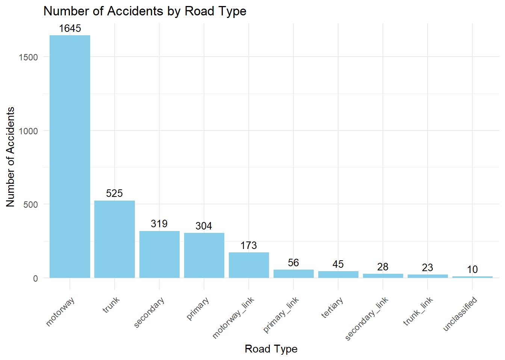
The plot shows more than half of the accidents in 2022 happened on the motorway.
# Group by condition and count the number of accidents
accidents_by_weather <- snapped_accidents %>%
group_by(weather_rd) %>%
summarise(accident_count = n()) %>%
ungroup()
# Create a column chart
ggplot(accidents_by_weather, aes(x = reorder(weather_rd, -accident_count), y = accident_count)) +
geom_col(fill = "skyblue") +
geom_text(aes(label = accident_count), vjust = -0.5, color = "black", size = 3.5) + # Add data labels
labs(title = "Number of Accidents by Weather Condition",
x = "Weather Condition",
y = "Number of Accidents") +
theme_minimal() +
theme(axis.text.x = element_text(angle = 45, hjust = 1))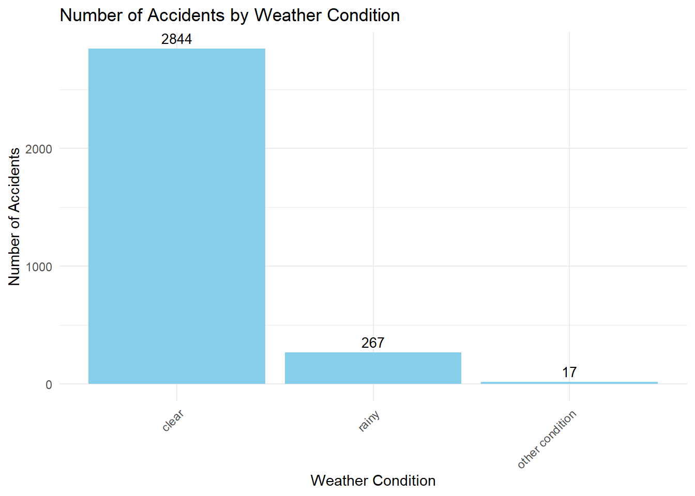
The above plot shows that 90% of the accidents in 2022 happened under clear weather.
# Group by condition and count the number of accidents
accidents_by_road <- snapped_accidents %>%
group_by(road_rd) %>%
summarise(accident_count = n()) %>%
ungroup()
# Create a column chart
ggplot(accidents_by_road, aes(x = reorder(road_rd, -accident_count), y = accident_count)) +
geom_col(fill = "skyblue") +
geom_text(aes(label = accident_count), vjust = -0.5, color = "black", size = 3.5) + # Add data labels
labs(title = "Number of Accidents by Road Condition",
x = "Road Condition",
y = "Number of Accidents") +
theme_minimal() +
theme(axis.text.x = element_text(angle = 45, hjust = 1))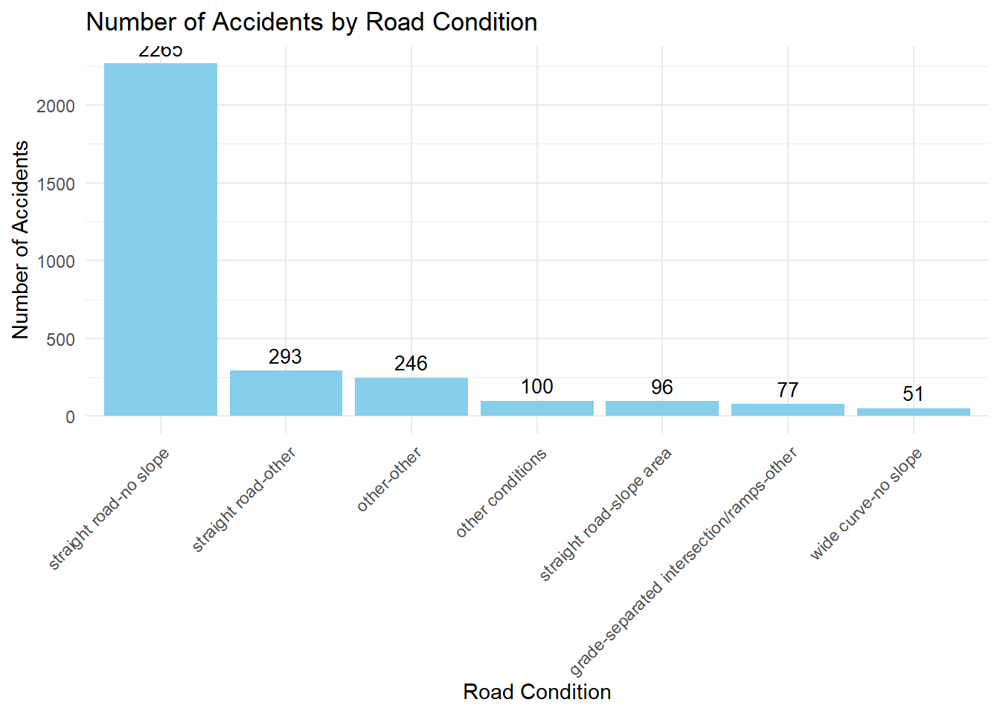
The chart shows that 72.4% of the accidents happened on straight road with no slope.
6.4.2 Behavioural Factors
The behavioral factors from presumed cause are visualized using ggplot() as in below code chunk.
# Group by condition and count the number of accidents
accidents_by_cause <- snapped_accidents %>%
group_by(presumed_cause_rd) %>%
summarise(accident_count = n()) %>%
ungroup()
# Create a column chart
ggplot(accidents_by_cause, aes(x = reorder(presumed_cause_rd, -accident_count), y = accident_count)) +
geom_col(fill = "skyblue") +
geom_text(aes(label = accident_count), vjust = -0.5, color = "black", size = 3.5) + # Add data labels
labs(title = "Number of Accidents by Presumed Cause",
x = "Presumed Cause",
y = "Number of Accidents") +
theme_minimal() +
theme(axis.text.x = element_text(angle = 45, hjust = 1))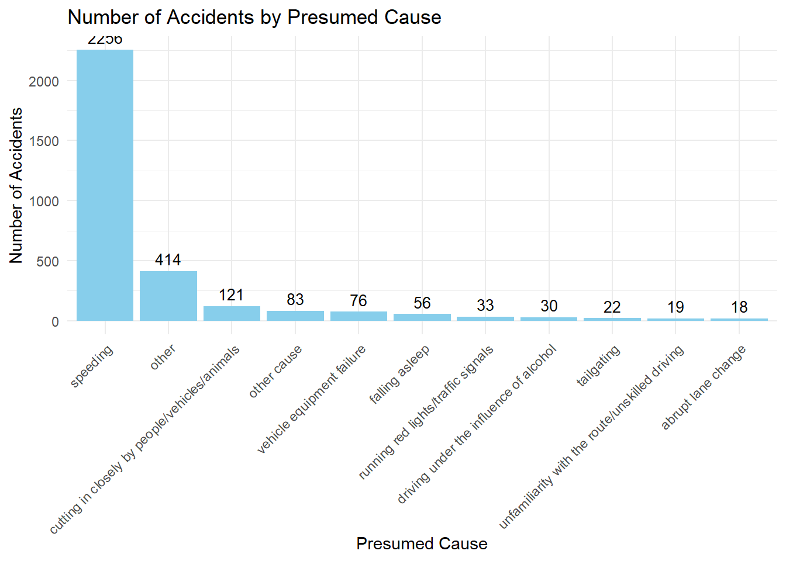
The chart shows 72% of accidents was due to speeding.
7 Temporal Network Spatial Point Pattern Analysis
7.1 Temporal Dimension
First we derive the start of each month for year 2022 to use as label for the later maps.
start <- as.POSIXct("2022/01/01", format = "%Y/%m/%d")
months <- as.character(1:12)
months <- ifelse(nchar(months)==1, paste0("0", months), months)
months_starts_labs <- paste("2022/",months,"/01", sep = "")
months_starts_num <- as.POSIXct(months_starts_labs, format = "%Y/%m/%d")
months_starts_num <- difftime(months_starts_num, start, units = "days")
months_starts_num <- as.numeric(months_starts_num)
months_starts_labs <- gsub("2022/", "", months_starts_labs, fixed = TRUE)Next we calculate the kernel density values in time for several bandwidths using below code chunk.
w <- rep(1,nrow(bmr_acc))
samples_t <- seq(0, max(bmr_acc$dayofyear), 1)
time_kernel_values <- data.frame(
bw_10 = tkde(bmr_acc$dayofyear, w = w, samples = samples_t, bw = 10, kernel_name = "quartic"),
bw_20 = tkde(bmr_acc$dayofyear, w = w, samples = samples_t, bw = 20, kernel_name = "quartic"),
bw_30 = tkde(bmr_acc$dayofyear, w = w, samples = samples_t, bw = 30, kernel_name = "quartic"),
bw_40 = tkde(bmr_acc$dayofyear, w = w, samples = samples_t, bw = 40, kernel_name = "quartic"),
bw_50 = tkde(bmr_acc$dayofyear, w = w, samples = samples_t, bw = 50, kernel_name = "quartic"),
bw_60 = tkde(bmr_acc$dayofyear, w = w, samples = samples_t, bw = 60, kernel_name = "quartic"),
time = samples_t
)
df_time <- reshape2::melt(time_kernel_values,id.vars = "time")
df_time$variable <- as.factor(df_time$variable)
ggplot(data = df_time) +
geom_line(aes(x = time, y = value)) +
scale_x_continuous(breaks = months_starts_num, labels = months_starts_labs) +
facet_wrap(vars(variable), ncol=2, scales = "free") +
theme(axis.text = element_text(size = 5))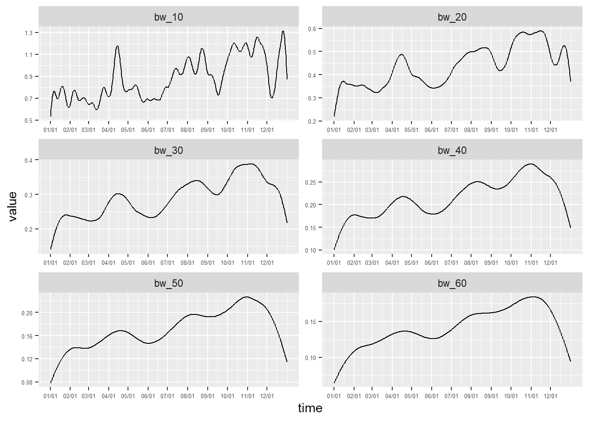
We can see that a bandwidth between 30 and 40 days can capture the fluctuations and the trend in traffic accidents throughout 2022: the increase in traffic accident during mid of April (Songkran festival), followed by a decrease until Jun, before the number of accidents starts to increase until the end of the year.
7.2 Spatial Temporal Bandwidth Selection
The cross validation likelihood of different network and time bandwiths are calculated using bw_tnkde_cv_likelihood_calc() as in below code chunk.
cv_scores <- bw_tnkde_cv_likelihood_calc(
bws_net = seq(500,1000,100),
bws_time = seq(20,60,10),
lines = network,
events = bmr_acc,
time_field = "dayofyear",
w = rep(1, nrow(bmr_acc)),
kernel_name = "quartic",
method = "simple",
diggle_correction = FALSE,
study_area = NULL,
max_depth = 8,
digits = 2,
tol = 0.1,
agg = 30,
sparse=TRUE,
grid_shape=c(1,1),
sub_sample=1,
verbose = FALSE)cv_scores 20 30 40 50 60
500 -394.7186 -334.0445 -299.0691 -274.7406 -252.7279
600 -374.2905 -313.2305 -277.8549 -254.1699 -232.1701
700 -353.0463 -293.8778 -258.3238 -235.6832 -213.6953
800 -333.0546 -275.9970 -239.6473 -218.0638 -196.2973
900 -316.8013 -261.2312 -222.6306 -201.8828 -182.2077
1000 -300.9982 -251.6730 -213.0711 -192.3536 -172.2757According to this “leave one out cross validation” method, the bandwidths of 1000 metres and 60 days has the lowest cross validation score and are chosen to be the optimal bandwidth for further density calculation.
7.3 Perform Temporal Network Kernel Density Estimate (TNKDE)
The TNKDE is calculated using below code chunk.
# choosing sample in times (every 30 days)
sample_time <- seq(0, max(bmr_acc$dayofyear), 30)
# calculating densities
tnkde_densities <- tnkde(lines = network,
events = bmr_acc,
time_field = "dayofyear",
w = rep(1, nrow(bmr_acc)),
samples_loc = samples,
samples_time = sample_time,
kernel_name = "quartic",
bw_net = 1000, bw_time = 60,
method = "simple",
div = "bw", max_depth = 8,
digits = 2, tol = 0.01,
agg = 30, grid_shape = c(2,2),
verbose = FALSE)We add the TNKDE of every 30 days to the samples sf data frame
samples$tnkde_30 = tnkde_densities[,2]
samples$tnkde_60 = tnkde_densities[,3]
samples$tnkde_90 = tnkde_densities[,4]
samples$tnkde_120 = tnkde_densities[,5]
samples$tnkde_150 = tnkde_densities[,6]
samples$tnkde_180 = tnkde_densities[,7]
samples$tnkde_210 = tnkde_densities[,8]
samples$tnkde_240 = tnkde_densities[,9]
samples$tnkde_270 = tnkde_densities[,10]
samples$tnkde_300 = tnkde_densities[,11]
samples$tnkde_330 = tnkde_densities[,12]
samples$tnkde_360 = tnkde_densities[,13]We use different functions of tmap to plot the map for each sample in time.
# Extract the last 12 columns' names
cols_to_plot <- tail(colnames(samples), 12)
# Plot the map for each column
tm_shape(bmr_boundary) +
tm_polygons() +
tm_shape(samples) +
tm_dots(col = cols_to_plot, style = "kmeans", palette = "Reds", n=10, size = 0.05) +
tm_layout(legend.show = FALSE,
title = cols_to_plot , title.size = 1)Warning: The value range of the variable "tnkde_90" is less than 1e-9Warning: The value range of the variable "tnkde_120" is less than 1e-9Warning: The value range of the variable "tnkde_210" is less than 1e-9Warning: The value range of the variable "tnkde_360" is less than 1e-9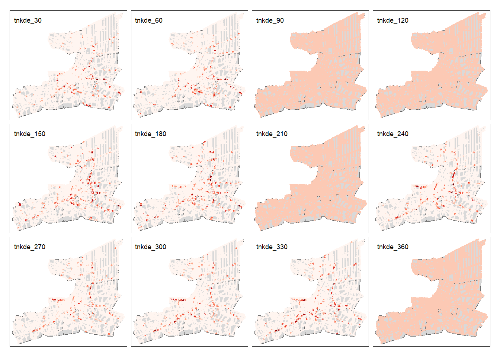
The location of many of the hotspots stay along the same roads across different points in time:
Several hotspots detected along the vertical road connecting Samut Prakan, Bangkok and Pathum Thani province. Refer to the maps on TNKDE at 60 days, 150 to 180 days, 240 to 300 days.
Several hotspots detected along the horizontal road connecting Bangkok and Samut Sakhon province. Refer to the maps on TNKDE at 240 to 330 days.
8 Conclusions and Future Improvements
8.1 Factors affecting Traffic Accidents
The above analysis highlights a few key factors affecting road traffic accidents in the 4 provinces of BMR:
Environmental factors: do not seem to play an important role as majority of the accidents happened under clear weather (90%) and on straigh road with no slope (72%).
Driver behaviors: is an important factor as 72% of the accidents recorded was due to speeding.
Spatial factor: Network Constrained G- and K-Function results confirm the clustered distribution of accidents in BMR.
On Spatial temporal factors
Month in year: High STKDE in in December in Bangkok and Samut Sakhon area, followed by January. From August to November, the density spread more equally across the 4 provinces. Cool season (especially in January and December) has the highest density, this can be partly due to this season being high season for tourism in Thailand.
Day in week: All 4 provinces have areas with high density on Monday (highest in Bangkok), followed by Sunday where high density areas are more spread out. The density is lower during middle of the week (Tuesday to Thursday) and starts to pick up towards the weekend (Friday to Sunday).
Hour of day: The highest density can be observed at late night (22PM to 0 AM of the next day) and from 8AM to 11:59AM. For the remainder of the day, high density can be observed during lunch time (12PM - 13PM) and in the evening (16PM - 19PM).
The TNKDE maps show many of the hotspots stay along the same roads across different points in time: the vertical road connecting Samut Prakan, Bangkok and Pathum Thani province and the horizontal road connecting Bangkok and Samut Sakhon province.
8.2 Future Improvement
As I encountered certain computational capacity constraint given the data size, the below improvements can be done on the analysis of the accidents spatial temporal distribution in BMR:
As the accidents distribution is clustered, using adaptive bandwith instead of fixed bandwidth for KDE methods may avoid underestimating the density of areas with lower number of accidents.
User method = “continuous” instead of “simple” since the road network in BMR contains many intersections.
Use cross validation method for bandwidth selection to allow for a more data-driven approach when selecting bandwidth.
Increase the number of simulations to calculate network constrained G and K functions for a more comprehensive range of comparison.
9 Reference
Jeremy Gelb (2024). Temporal Network Kernel Density Estimate
Jeremy Gelb (2024). K-nearest neighbour adaptive bandwidth
Jeremy Gelb (2024). Network k Functions
Jeremy Gelb (2024). Network Kernel Density Estimate
Tin Seong Kam (2024). Spatio-Temporal Point Patterns Analysis From R for Geospatial Data Science and Analytics
Tin Seong Kam (2024). Network Constrained Spatial Point Patterns Analysis
WikiProject Thailand. WikiProject Thailand
Wikipedia. Bangkok Metropolitan Region